Questão 1 · Quadro Clínico e Indicações de Tomograf ia de Crânio · 4000130445Mulher, 34a, vítima de atropelamento, com perda da consciência, chega a Unidade de Emergência. Exame físico: PA= 118x69 mmHg, FC= 87bpm, FR= 16 irpm, Oximetria de pulso (ar ambiente)= 99%, Escala de Coma Enquanto aguardava exames apresentou redução de 4 pontos na ECG e anisocoria. O ACHADO TOMOGRÁFICO ESPERADO É:
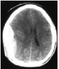
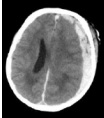
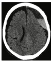
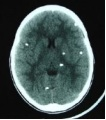
A Glasgow
B (ECG)= 15.
Revisar: só 2 alternativas
Questão 2 · Atributos gerais da Atenção Primária à Saúde APS · 4000130424A Atenção Primária em Saúde (APS) representa o primeiro nível de atenção, é uma estratégia de organização dos sistemas de saúde e também um modelo de mudança da prática clínico-assistencial dos profissionais de saúde. SÃO ATRIBUTOS ESSENCIAIS DA APS:
A Orientação familiar e comunitária e competência cultural.
B Participação social e equidade.
C Clínica ampliada e compartilhada.
D Integralidade e coordenação.
Questão 3 · Declaração de óbito DO Atestado de óbito · 4000130423Você é chamado para constatar o óbito de um vizinho de 92 anos de idade. Trata se de pessoa conhecida acompanhada no Centro de Saúde por hipertensão arterial crônica, obesidade e diabetes mellitus. NESTA SITUAÇÃO, VOCÊ:
A Pode receber honorários pela constatação do óbito, mas não pela emissão da Declaração de Óbito.
B Pode receber honorários pela constatação do óbito e pela emissão da Declaração de Óbito.
C Não pode receber honorários pela constatação do óbito, mas pode receber pela emissão da Declaração de Óbito;
D Não pode receber honorários pela constatação do óbito, nem pela emissão da Declaração de Óbito.
Questão 4 · Política Nacional de Atenção Básica PNAB · 4000130421A unidade de saúde da família é definida como unidade ambulatorial pública de saúde destinada a realizar assistência contínua nas especialidades básicas, por intermédio de equipe multiprofissional. A ESTRATÉGIA DE SAÚDE DA FAMÍLIA ORGANIZA-SE DA SEGUINTE FORMA:
A Adscrição de população e territorialização.
B Equipe composta por generalista, pediatra, ginecologista, enfermeiro e agente comunitário de saúde.
C Cada equipe responsabiliza-se por até 4.500 famílias.
D Programação e planejamento centralizados.
Questão 5 · Incidência e Prevalência · 4000130419O relatório de exames periódicos de uma indústria têxtil com 1000 funcionários registrou 150 indivíduos com hipertensão arterial, em 2016. Após 12 meses o relatório foi atualizado com 170 casos. Não houve demissões, aposentadorias, falecimentos e admissões no período. A PROPORÇÃO DE INCIDÊNCIA DA DOENÇA EM 2017 É:
A 5,1%.
B 2%.
C 17%.
D 13%.
Questão 6 · Ética Médica · Direitos humanos · 4000130417A atenção à violência sexual contra a mulher requer uma abordagem intersetorial, multipro ssional e interdisciplinar, com interface nas questões de direitos humanos, de segurança pública e de justiça. EM RELAÇÃO AOS ASPECTOS ÉTICOS E LEGAIS, É CORRETO AFIRMAR QUE:
A A assistência à saúde da pessoa que sofre violência sexual é prioritária e a recusa infundada e injustificada de atendimento pode ser caracterizada como imprudência.
B A apresentação de documentos policiais, a gravidade da circunstância e os riscos da violência sexual exigem o rigoroso cumprimento da atenção integral em saúde.
C Os dados sobre a violência sofrida e suas circunstâncias, bem como os achados do exame físico e as medidas instituídas, devem ser registrados em prontuário detalhadamente.
D No atendimento imediato após a violência sexual caberia a alegação do médico de objeção de consciência, na medida que se trata de um direito assegurado no Código de Ética Médica.
Questão 7 · Doenças relacionadas ao trabalho · Medicina Preventiva · 4000130416Pneumoconiose devida à Poeira de Sílica Silicose A importância da anamnese ocupacional é identi car situações e/ou fatores de risco e/ou agentes que possam provocar doenças relacionadas ao trabalho. A ALTERNATIVA QUE CARACTERIZA ESTA ASSOCIAÇÃO É:
A Radiação de infravermelho e ceratoconjuntivite.
B Inseticidas organofosforados e dermatite alérgica.
C Fumos de chumbo e hidrarginismo.
D Poeira de sílica cristalina e câncer de pulmão.
Questão 8 · Comunicação de Acidente de Trabalho CAT · 4000130414Homem, 30a, assalariado com carteira de trabalho. Procura atendimento médico em Unidade Básica de Saúde por dor no ombro direito há um ano, com piora há seis meses. História ocupacional: de um carrinho abaixo da cintura e colocá-las em uma máquina brunidora acima dos ombros. Exame físico: arco doloroso de Simmonds positivo a 90º; teste de Jobe positivo à direita. PARA A ABERTURA DE CAT VOCÊ DEVE:
A Encaminhar para o Centro de Referência de Saúde do Trabalhador.
B Encaminhar ao INSS.
C Emitir relatório médico para a empresa.
D Solicitar ultrassonografia de ombro direito.
Questão 9 · Diagnóstico · Dermatite de contato alérgica · Dermatite de contato por irritante primário · 4000130412Mulher, 32 a, técnica de enfermagem há três anos. Refere o aparecimento de lesões nas mãos há 4 meses, que melhoram com uso de pomada de corticoide. Retornaram há dois meses após as férias. Exame físico: Pele: lesões eritemo- descamativas em região dorsal das mãos e regiões interdigitais bilaterais. O DIAGNÓSTICO E O EXAME A SER SOLICITADO SÃO:
A Dermatite por sensibilização; teste de puntura.
B Dermatite irritativa; teste de puntura.
C Dermatite por sensibilização; teste epicutâneo.
D Dermatite irritativa; teste epicutâneo.
Questão 10 · Ensino e pesquisa médica · 4000130410Segundo um levantamento cerca de 30% de todos os formandos em Medicina relatam ter passado por humilhação pública durante a formação. Esta experiência impacta negativamente na qualidade do aprendizado e, consequentemente, pode resultar em danos aos pacientes e prejuízos à qualidade assistencial. É CORRETO AFIRMAR QUE:
A Há uma cultura disseminada de que sofrer assédio seria algo necessário para que um indivíduo se torne médico, inerente à socialização secundária e, portanto, há poucos meios efetivos de evitá-lo.
B A posição hierárquica de subordinação ao assediador, o consequente medo de represálias pode representar uma importante barreira para se denunciar o episódio, minimizadas com recursos institucionais.
C Apesar de inúmeras tentativas institucionais de coibir comportamentos antiprofissionais que envolvam assédio na formação, a questão do anonimato é impossível de ser garantida, o que inibe as denúncias.
D As atitudes do abusado em relação ao abusador constituem os mecanismos principaisde enfrentamento de situações de assédio, esperando um momento adequado para conversar individualmente com o superior.
Questão 11 · Vigilância Sanitária · 4000130408A Equipe de Saúde da Família percebe que várias pacientes do bairro procuram atendimento com sintomas e sinais sugestivos de onicomicose. As pacientes frequentam o mesmo salão de manicure. A INSPEÇÃO E FISCALIZAÇÃO DO ESTABELECIMENTO É ATRIBUIÇÃO DA VIGILÂNCIA:
A Epidemiológica.
B Sanitária.
C Ambiental.
D Do Trabalho.
Questão 12 · Projeto Terapêutico Singular · 4000130406Equipe de Saúde da Família recebe solicitação da escola do bairro para que providencie consulta com psicólogo para menina de 9 anos de idade que apresenta di culdade de aprendizagem. A equipe conhece a família da criança. Pai está recluso, mãe trabalha como doméstica e irmão de 16 anos abandonou o colégio. A EQUIPE DEVE:
A Elaborar um Projeto Terapêutico Singular.
B Encaminhar a criança ao psicólogo.
C Encaminhar o caso ao Conselho Tutelar.
D Denunciar a mãe por negligência.
Questão 13 · Vacina contra raiva · 4000130404Menino, 8a, manipulou morcego que encontrou morto na escola. Foi constatado que o morcego era de espécie frugívora. A CONDUTA EM RELAÇÃO AO RISCO DE RAIVA É:
A Expectante e descartar morcego.
B Iniciar vacinação e descartar morcego.
C Iniciar sorovacinação e encaminhar morcego para análise.
D Expectante e encaminhar morcego para análise.
Questão 14 · Mortalidade Inf antil e Perinatal · Indicadores especiais de mortalidade · 4000130402Em uma região com população de 1.000.000 habitantes, registraram-se 12.000 óbitos na população total e 10.000 nascidos vivos no ano. Entre os óbitos, 80 crianças morreram antes de completar 28 dias e 20 com idade de 28 dias a 1 ano. SOBRE INDICADORES NA REGIÃO PODE- SE AFIRMAR QUE:
A A mortalidade proporcional de menores de 1 ano na região é maior que 12%.
B O coeficiente de mortalidade infantil tardia é de 20%.
C O coeficiente de mortalidade geral é de 120 por 1000 habitantes.
D A mortalidade infantil é de 10 por 1000 nascidos vivos.
Questão 15 · Curva ROC · 4000130400Na bula de um teste de imunoensaio de terceira geração (A) foi apresentada a curva Characteristic) PARA AFIRMAR A SUPERIORIDADE DO TESTE “A” EM RELAÇÃO AO “B” É PRECISO OBSERVAR QUE:
A A área sob a curva do teste (A) é maior que a do teste (B).
B O teste (A) apresenta ponto de corte com maior sensibilidade, independente da taxa de falsos positivos comparado com o teste.
C Não é possível avaliar os testes sem conhecer a prevalência da doença na população.
D O teste (A) deve apresentar maior simetria entre especificidade e sensibilidade que o teste (B).
Questão 16 · Transição Demográf ica · 4000130397Nas últimas décadas, o aumento da proporção de idosos em relação à população jovem no Brasil caracteriza a chamada transição demográfica. ESSE CENÁRIO É EXPLICADO POR:
A Estagnação das taxas de mortalidade e fecundidade.
B Quedas nas taxas de mortalidade e fecundidade.
C Queda na taxa de mortalidade e estagnação da taxa de fecundidade.
D Estagnação na taxa de mortalidade e queda da taxa de fecundidade.
Questão 17 · Tipos de Estudos Epidemiológicos · 4000130394Prontuários de dois grupos de recém-nascidos (RN) de gestantes de baixo risco foram acessados para acompanhar a ocorrência de taquipneia transitória e hipertensão pulmonar persistente do RN, durante as quatro primeiras semanas de vida. Os grupos foram divididos conforme a via de parto: vaginal e cesárea eletiva. O DELINEAMENTO UTILIZADO FOI:
A Inquérito sobre a gravidade de problemas respiratórios no RN.
B Ensaio clínico para avaliar prognóstico do RN nas primeiras semanas de vida.
C Estudo ecológico sobre o diagnóstico de problemas respiratórios precoces no RN.
D Estudo de coorte para comparar riscos de quadros respiratórios precoces em RN.
Questão 18 · Diagnóstico de distocias no partograma · Parada secundária da dilatação · Distocia de dilatação · 4000130393Mulher. 25a, G2P1C0A0, com idade gestacional de 39 semanas procura o pronto atendimento com queixa de contrações. Exame obstétrico à admissão: altura uterina de 39cm, batimentos cardíacos fetais= 144bpm e dinâmica uterina: 3 contrações de moderada intensidade e duração média de 45 segundos em 10 minutos. A evolução do trabalho de parto está representada no partograma: O DIAGNÓSTICO É:

A Desproporção cefalopélvica.
B Distócia de rotação.
C Parto eutócico.
D Período expulsivo prolongado.
Questão 19 · Formas de apresentação · 4000130390Mulher, 21 anos, nuligesta, comparece a consulta na Unidade de Saúde Básica, com queixa de prurido e aparecimento de lesões em região genital. Conforme a figura abaixo; A CONDUTA É:

A Coletar citologia cervical para definir conduta.
B Encaminhar para exérese cirúrgica.
C Aplicar acetato de clobetasol semanalmente.
D Aplicar ácido tricloroacético a 80% semanalmente.
Questão 20 · Interpretação e conduta f rente as atipias citológicas · 4000130386Mulher, 35a, G3P3C0, retorna à Unidade Básica de Saúde para resultado de colpocitologia com diagnóstico de atípia de células escamosas de significado indeterminado, possivelmente não neoplásica (ASC-US). Antecedente Pessoal: exérese da zona de transformação do colo do útero aos 28 anos. Anatomopatológico: lesão intraepitelial de alto grau/neoplasia intraepitelial cervical grau 3 com margem endocervical livre e ectocervical positiva. Recebeu alta após três anos de seguimento, sem evidências de recidiva. A CONDUTA É:
A Encaminhar para colposcopia.
B Encaminhar para histerectomia.
C Encaminhar para nova exérese de zona de transformação.
D Repetir citologia em seis meses.
Questão 21 · Criterios diagnósticos da préeclampsia · Conduta obstétrica · Préeclâmpsia com sinais de gravidade · 4000130385Adolescente, 15a, G1P0C0A0, comparece à consulta pré-natal, com idade gestacional 35 semanas, queixa-se de dor em hipocôndrio direito, náuseas e ganho de 1 kg em 1 semana. Exame físico: PA= 130x90 mmHg, Exame ginecológico: altura uterina de 32 cm, batimentos cardíacos fetais= 130 bpm. A CONDUTA É:
A Internação para cesárea de emergência.
B Internação, exames e avaliação de vitalidade fetal.
C Retorno em 7 dias com exames e avaliação vitalidade fetal.
D Orientar dieta, repouso, controle de pressão e retorno em pré-natal em 7 dias.
Questão 22 · Tratamento · 4000130382Adolescente, 18a, G1P1, vem ao pronto socorro referindo corrimento vaginal e dor em baixo ventre há 2 dias. Antecedentes pessoais: método anticoncepcional: DIU de cobre há 1 ano, Data última Menstruação: 7 dias. Exame físico: bom estado geral, PA=120x80 mmHg, FC=72 bpm; abdome: plano, ácido, doloroso à palpação super cial em baixo ventre, sem descompressão brusca dolorosa; exame especular: presença de secreção endocervical em moderada quantidade, com hiperemia leve do colo uterino, cauda do DIU 2 cm. Toque vaginal: útero anteverso etido de tamanho normal, com dor à mobilização do colo e à palpação anexial. A CONDUTA É:
A Ceftriaxona 500 mg IM dose única, doxiciclina 200 mg/dia e metronidazol 1 g/dia,ambos por 14 dias.
B Retirar DIU e reavaliar em 7 dias.
C Ciprofloxacina 500 mg e azitromicina 1 grama dose única.
D Retirar o DIU e azitromicina 1 grama dose única.
Questão 23 · Fatores de risco · 4000130379Mulher, 63a, hiperplasia endometrial complexa com atipia. É CORRETO AFIRMAR QUE:
A É lesão precursora de câncer de endométrio do tipo II.
B Está associada a hiperestrogenismo e obesidade na pós-menopausa.
C A taxa de progressão para câncer de endométrio é de 90%.
D Está associada a tabagismo e multiparidade.
Questão 24 · Microbiologia e patogênese · 4000130377Puérpera, 42a, comparece à Unidade Básica de Saúde com queixa de febre, que começou há dois dias, dor em baixo ventre e o sangramento vaginal, que estava quase parando, aumentou muito, com odor fétido e muitos coágulos. Antecedente pessoal: oitavo dia de puerpério, parto cesárea, após 18 horas de trabalho de parto, com bolsa rota por 10 horas. Exame físico: FC= 110 bpm, T= 38°C, PA= 110x70 mmHg; toque vaginal: colo 1 polpa folgada de dilatação, útero globoso, aumentado para 14 semanas; mamas: lactantes, sem alterações. A ETIOLOGIA É:
A Streptococcus do grupo A.
B Staphylococcus aureus.
C Clostridium perfringens.
D Infecção polimicrobiana.
Questão 25 · Diagnóstico · 4000130375Mulher, 20a, procura atendimento com queixa de feridas dolorosas em vulva e dor para urinar há 2 dias. Exame ginecológico: pequenas vesículas, aproximadamente 3 mm, com base eritematosa, dolorosas ao toque, em grandes lábios. O DIAGNÓSTICO É:
A Herpes genital.
B Sífilis primária.
C Cancro de Ducrey.
D Linfogranuloma venéreo.
Questão 26 · Morte f etal óbito f etal OF · Etiologia e f isiopatologia · Indicações · 4000130373Mulher, 42a, G3P2C2A0, idade gestacional 35 semanas comparece ao Pronto Socorro com queixa de redução de movimentos fetais. Refere múltiplos episódios de hipoglicemia embora mantenha padrão alimentar e a mesma dose de insulina. Antecedentes pessoais:diabetes e hipertensão gestacionais em uso de insulina NPH 30 unidades ao dia e metildopa 750mg/dia. Exame físico: PA= 110x80 mmHg. Fita urinária: proteína: negativa. ESSA INTERCORRÊNCIA PODE SER EXPLICADA POR:
A Desenvolvimento fisiológico da gestação.
B Pré-eclampsia sobreposta.
C Insuficiência placentária.
D Malformação fetal.
Questão 27 · Coagulopatias · 4000130371Adolescente, 12a, refere menstruações com ciclos regulares com uxo aumentado, desde a menarca há 1 ano. Antecedentes Pessoais: nega procedimentos cirúrgicos. A CONDUTA É:
A Investigar malformações Mullerianas.
B Investigar presença de endometriose.
C Orientar que é normal nessa fase da vida.
D Investigar Doença de Von Willebrand.
Questão 28 · Clínico · 4000130369Mulher, 28a, G2P0A1 refere corrimento vaginal em borra de café, leves dores na fossa ilíaca esquerda e atraso menstrual. Exame físico: abdome: doloroso à palpação do baixo ventre; toque vaginal: colo embebido e fechado e útero de difícil delimitação. Ultrassonogra a transvaginal: útero vazio, ausência de líquido livre na pelve e presença de tumoração anexial esquerda, de ecogenicidade heterogênea, medindo 3,0 cm de diâmetro, sugestivo de prenhez ectópica. Beta hCG urinário: positivo. A CONDUTA É:
A Metotrexato intramuscular seguido de laparotomia exploradora e preservação da trompa.
B Laparotomia exploradora com salpingectomia e metotrexato intramuscular.
C Metotrexato intramuscular e seguimento do Beta hCG sérico.
D Conduta expectante e seguimento do Beta hCG sérico.
Questão 29 · Tratamento não hormonal dos sintomas climatéricos · 4000130367Mulher, 54a, nas atividades diárias e tem ressecamento vaginal. Antecedentes Pessoais: asma em uso de corticosteroide via oral e trombose venosa profunda em uso de varfarina. A CONDUTA É:
A Terapia hormonal combinada.
B Isoflavona.
C Inibidor de recaptação de serotonina.
D Tibolona.
Questão 30 · Trabalho de parto prematuro TPP · Acima de 34 semanas · 4000130366Intercorrências obstétricas obstetrícia patológica Mulher, 28a, G1P0A0, com idade gestacional de 34 semanas e 5 dias, chega à Maternidade com queixa de dor em baixo ventre em cólica há 6 horas com piora progressiva, saída de secreção mucosa da vagina e boa movimentação fetal. Antecedente Gestacional: diabetes gestacional controlada com dieta. Exame físico: FC= 90 bpm, FR=18 irpm, T= 36,5°C; exame ginecológico: altura uterina de 32 cm, 2 contrações de 40 segundos em 10 minutos, Batimentos Cardiofetais= 140 bpm; Toque vaginal: colo uterino 100% esvaecido, 4 cm de dilatação, apresentação cefálica, bolsa íntegra. ALÉM DA INTERNAÇÃO E TRIAGEM INFECCIOSA, A CONDUTA É:
A Corticoide para maturação pulmonar fetal e inibição do trabalho de parto por 48 horas.
B Sulfato de magnésio para neuro proteção fetal e inibição do trabalho de parto por 48 horas.
C Antibioticoprofilaxia para estreptococo do grupo B e inibição do trabalho de parto por 48 horas.
D Antibioticoprofilaxia para estreptococo do grupo B e assistência ao trabalho de parto
Questão 31 · Primeiro periodo dilatação · Métodos de avaliação da vitalidade f etal · 4000130363Avaliação da vitalidade f etal intraparto Mulher, 25a, G2P1C0A0, idade gestacional de 41 semanas. Trabalho de parto induzido com ocitocina, queixando-se de muita dor. Toque vaginal: colo com 8 cm de dilatação, cefálico, plano -1 de De Lee, bolsa rota espontânea líquido claro com grumos grossos. Cardiotocografia: A CONDUTA NO MOMENTO É:

A Suspender ocitocina, analgesia e monitorização continua dos batimentos cardio fetais.
B Hidratação e cesárea de urgência sob raquianestesia.
C Manter ocitocina e parto fórceps Simpson com bloqueio pudendo bilateral.
D Aumentar ocitocina, analgesia e monitorização intermitente dos batimentos cardio fetais.
Questão 32 · Diagnóstico · Câncer de ovário · 4000130360EM RELAÇÃO AO USO DO EXAME CA125 NO CÂNCER DE OVÁRIO, É CORRETA A AFIRMAÇÃO:
A Apresenta alta sensibilidade e pode ser utilizado para rastreamento.
B Apresenta alta especificidade e pode ser utilizado para o diagnóstico inicial
C Apresenta baixa especificidade e pode estar elevado na miomatose e endometriose D)
D Apresenta baixa frequência de falso positivo e pode ser utilizado para planejamento cirúrgico.
Questão 33 · Cistos mamários · 4000130358Mulher, 52a, G3C3A0, comparece no Centro de Saúde por nódulo indolor em mama esquerda, há três meses. Refere irregularidade menstrual, e fogachos. Mamogra a: BIRADS® 0. Ultrassonogra a mamária: lesão cística em mama esquerda, com conteúdo predominantemente anecoico, sem debris ou áreas sólidas, com reforço acústico posterior, BIRADS® 2. Exame físico: mama esquerda com discreto abaulamento da pele na junção dos quadrantes superiores à inspeção estática; à palpação, identi cada nodulação única, bem delimitada e móvel, aproximadamente 25 mm de diâmetro. Mama direita normal. Expressão das árvores ductais negativas bilateralmente. Axilas e fossas supraclaviculares bilateralmente livres. A CONDUTA É:
A Excisão cirúrgica.
B Acompanhamento ginecológico de rotina anual.
C Estadiamento para câncer de mama.
D Punção aspirativa com agulha fina.
Questão 34 · Tratamento · 4000130354Menino, 11a, hígido, com febre baixa e adenomegalia cervical não dolorosa. Foram colhidas sorologias com orientação para voltar em 30 dias. Retorna sem sintomas. Sorologia para toxoplasmose: IgM e IgG reagentes. A CONDUTA É:
A Realizar controles de hemograma e imunoglobulinas semestralmente.
B Não há necessidade de tratamento medicamentoso.
C Repetir o exame devido reações cruzadas.
D Prescrever a associação pirimetamina e sulfadiazina.
Questão 35 · Hepatites na gestação · 4000130353Gestante com 39 semanas de gestação, apresenta sorologia para hepatite B com HBsAg reagente e HBeAg reagente. A CONDUTA É:
A Parto cesárea e administração de imunoglobulina humana anti-hepatite B ao neonato ainda na sala de parto ou dentro das primeiras 12 a 24 horas.
B Contraindicação da amamentação e administração de imunoglobulina humana anti hepatite B ao neonato ainda na sala de parto ou dentro das primeiras 12 a 24 horas.
C Administração ao neonato de imunoglobulina humana anti-hepatite B na sala de parto ou dentro das primeiras 24 horas e a vacina hepatite B na sala de parto ou nas primeiras 12 horas após o nascimento.
D Realizar no neonato banho em água corrente ainda na sala de parto, imediatamente após o nascimento e administração da imunoglobulina humana anti-hepatite B e a vacina Hepatite B dentro das primeiras 24 horas.
Questão 36 · Bronquiolite · Pediatria · 4000130350Menino, 3m, é internado na Emergência com diagnóstico de bronquiolite viral aguda. bpm, oximetria (ar ambiente)= 90% sibilos difusos. A OFERTA DE OXIGÊNIO DEVE SER ESTABELECIDA POR:
A Cateter nasal simples.
B Oxitenda.
C Máscara não reinalante.
D Cânula nasal de alto fluxo.
Questão 37 · Pediatria · Traumatismo Cranioencef álico na Criança · 4000130349Menino, 9 meses, sofreu queda do colo do pai (cerca de 1m de altura) há cerca de 1 hora, com trauma na região parietal da cabeça. Teve 2 episódios de vômito. Exame físico: choroso, consolável, Glasgow 15, pupilas isocóricas e fotorreagentes; crânio: deformidade compatível com fratura e afundamento. A INDICAÇÃO DE REALIZAR TOMOGRAFIA DE CRÂNIO É DEVIDO A:
A Altura da queda maior de 90 cm.
B Presença de vômitos.
C Idade da criança.
D Presença da deformidade de crânio.
Questão 38 · Emergências Pediátricas Parada Cardiorrespiratória PCR e Arritmias na Emergência · Pediatria · 4000130348Menina, 5a, chega ao Pronto Socorro em parada cardiorrespiratória (PCR) em assistolia. Ao nal de um ciclo de reanimação cardiopulmonar (RCP), checa-se o ritmo, sendo identi cado ritmo sinusal. Exame físico: FC= 50 bpm; pulso periférico: no e tempo de enchimento capilar = 5 segundos. A CONDUTA É:
A Manter RCP de alta qualidade por mais um ciclo de 2 minutos.
B Administrar atropina.
C Administrar epinefrina (1:1000).
D Suspender a RCP e observar a monitorização, com ênfase na ventilação.
Revisar: possível letra faltando em enunciado
Questão 39 · Diagnóstico · 4000130346Menino, 4a, é trazido a consulta por estar com queixa de dor abdominal há 4 dias. Hábito urinário: urina mais escurecida. Hábito intestinal: sem evacuar há 3 dias. Exame físico: Pressão Arterial acima do limite superior para idade, estatura e sexo; Abdome: massa palpável em flanco esquerdo. O DIAGNÓSTICO É:
A Neuroblastoma.
B Fecaloma.
C Cisto renal.
D Tumor de Wilms.
Questão 40 · Reanimação neonatal · Pediatria · Reanimação neonatal em maiores de 34 semanas · 4000130344Durante recepção de um recém-nascido a termo com líquido amniótico meconial espesso, observa-se apneia, respiração irregular e frequência cardíaca menor que 100 bpm. A CONDUTA É:
A Laringoscopia para aspiração sob visualização direta do mecônio da hipofaringe e traqueia antes de iniciar a ventilação com pressão positiva
B Ventilação com pressão positiva com máscara facial e ar ambiente nos primeiros 60 segundos de vida.
C Ventilação com pressão positiva com máscara facial e concentração de oxigênio 30%nos primeiros 60 segundos de vida.
D Ventilação com pressão positiva com tubo traqueal e ar ambiente nos primeiros 60 segundos de vida.
Questão 41 · Pediatria · ImunizaçõesVacinação · 4000130341Menina, 2 meses, chega à Unidade Básica de Saúde para vacinação. Antecedentes Pessoais: Parto com 31 semanas de idade gestacional e peso de 1345g, permaneceu internada na unidade neonatal por 6 semanas, recebendo alta com 2155g em aleitamento materno exclusivo. Exame físico: Peso= 2595g e exame físico normal. DE ACORDO COM O CALENDÁRIO NACIONAL DE IMUNIZAÇÕES DO MINISTÉRIO DA SAÚDE, A CRIANÇA DEVE RECEBER TODAS AS VACINAS DE ACORDO COM:
A A idade cronológica pós-natal, nas mesmas doses das crianças a termo.
B A idade corrigida, nas mesmas doses das crianças a termo.
C A idade cronológica pós-natal, na metade das doses das crianças a termo.
D A idade corrigida, na metade das doses das crianças a termo.
Questão 42 · Complicações · Enecef alopatia por hiperbilirrubinemia · Icterícia neonatal · 4000130339O QUADRO CLÍNICO INICIAL DA ENCEFALOPATIA BILIRRUBÍNICA CARACTERIZA-SE POR:
A Letargia, hipotonia e sucção débil.
B Hipertonia, hipertermia e choro agudo de alta intensidade.
C Tetraparesia espástica, paresia vertical do olhar e convulsões.
D Apneia, coma e convulsões.
Questão 43 · Fibrose Cística · Pediatria · Tratamento · 4000130337Menino, 12a, vem à Emergência com febre, tosse produtiva com secreção espessa e piora do padrão respiratório habitual. Antecedente Pessoal: fibrose cística. A ANTIBIOTICOTERAPIA VISA COBERTURA PARA OS SEGUINTES AGENTES ETIOLÓGICOS:
A Haemophilus influenzae e Staphylococcus aureus.
B Klebsiella pneumoniae e Pseudomonas aeruginosa.
C Haemophilus influenzae e Klebsiella pneumoniae.
D Staphylococcus aureus e Pseudomonas aeruginosa.
Questão 44 · Tratamento · 4000130336Menino, 7a, é trazido a Unidade de Emergência após picada de escorpião no pé direito há cerca de 50 minutos. Refere dor intensa com formigamento no hálux e dorso do pé. Nega vômitos, refere batedeira no peito. FR= 22 irpm, PA= 110x60 mmHg, normofonéticas, sem sopros; Pulmões: roncos esparsos, sem desconforto. ALÉM DA ANALGESIA, A CONDUTA É:
A Observação por pelo menos 6 horas.
B Soro antiescorpiônico 2 ampolas e observação por 24 horas.
C Soro antiescorpiônico 4 ampolas e observação por 24 horas.
D Soro antiescorpiônico 6 ampolas e observação em UTI.
Questão 45 · Sinais e sintomas · 4000130334À recepção pós-parto, recém-nascido encontra-se hidrópico, com lesões de pele papuloescamosas, algumas vesiculosas, difusas, inclusive nas palmas das mãos e planta dos pés. O AGENTE ETIOLÓGICO É:
A Parvovírus B19
B Vírus da Rubeola.
C Treponema pallidum.
D Toxoplasma gondii.
Questão 46 · Febre amarela · Amamentação Aleitamento Materno · 4000130330Família residente em área onde foram confirmados casos de febre amarela foi orientada a comparecer à Unidade Básica de Saúde para receber a vacina da febre amarela. Entre os familiares há uma nutriz que está amamentando uma criança de 4 meses. ALÉM DA VACINA DE FEBRE AMARELA, A ORIENTAÇÃO PARA A NUTRIZ É:
A Manter a amamentação.
B Suspender a amamentação por 10 dias.
C Suspender a amamentação por 30 dias.
D Inibir a lactação.
Questão 47 · Pediatria · DDS46XX hiperplasia adrenal congênita · 4000130327Menina, 5a, é trazida à Unidade de Emergência com queixa de febre e tosse há 3 dias. Antecedentes pessoais: Hiperplasia adrenal congênita forma perdedora de sal, em uso de hidrocortisona e fludrocortisona. A CONDUTA É:
A Manter as mesmas doses da hidrocortisona e da fludrocortisona.
B Aumentar a dose da hidrocortisona e manter a dose da fludrocortisona.
C Manter a dose da hidrocortisona e aumentar a dose da fludrocortisona.
D Aumentar as doses da hidrocortisona e da fludrocortisona.
Questão 48 · Pediatria · Eritema Inf eccioso · 4000130324Criança, 4a, é trazida a Unidade de Emergência com queixa de tosse, coriza nasal e manchas vermelhas pelo corpo. As manchas começaram há 3 dias no rosto, na região das bochechas, con uentes, progredindo para o troco e membros. Pioram com o calor. Relata vacinação em dia. Exame físico: T= 36,6°C, FC= 98 bpm, FR= 22 irpm, Pele: exantema maculopapular em tronco e membros superiores, mais intenso em áreas descobertas e face extensora dos braços. Rosto com eritema intenso nas bochechas, poupando região perioral, nariz e testa. O AGENTE ETIOLÓGICO É:
A Streptococcus pyogenes.
B Paramyxoviridae.
C Parvovírus B19.
D Herpesvírus grupo 6.
Questão 49 · Pediatria · Corpo EstranhoEngasgo · 4000130321Menino, 3 anos ingeriu prego há 1 dia. Criança está assintomática. Radiograma: A CONDUTA É:
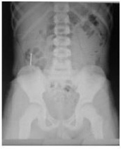
A Trânsito intestinal.
B Colonoscopia se não eliminado em 48h.
C Observação clínica domiciliar, monitorar a eliminação nas fezes.
D Observação clínica hospitalar, clister glicerinado de 12/12h até eliminação.
Questão 50 · Estimativa da Superf ície Corpórea Queimada e Circulação · Cirurgia · 4000130319Homem, 21a, é levado ao Pronto Socorro por sofrer queimaduras por fogo. Exame físico: Consciente, orientado, PA= 132x76 mmHg, FC= 87 bpm, FR= 16 irpm, Oximetria de pulso (em ar ambiente)= 100%, P= 70kg. Pele: lesões térmicas distribuídas nas faces anteriores do tórax, abdome, membros inferiores; primeiro grau= 11% e segundo grau= 25%. CONSIDERANDO A FÓRMULA DE PARKLAND O VOLUME CORRETO PARA REPOSIÇÃO É:
A 10080 ml em 24 horas
B 2520 ml em 8 horas.
C 1750 ml em 12 horas.
D 3500 ml em 24 horas.
Questão 51 · Apresentação Clínica · Diagnóstico · 4000130316Lactente, 18m, é levado pelos pais ao Pronto Socorro devido a episódios recorrentes de choro acompanhados de vômitos amarelados, com exão das pernas em direção do abdome quando deitada, com período de acalmia. Exame físico: T= 36,7oC, FC= 125 bpm, FR= 32 irpm, mucosas úmidas, corada; Abdome: plano, normotenso, massa palpável em hipocôndrio direito e presença de depressão em fossa ilíaca direita. Ultrassonogra a do abdome= presença do sinal do alvo e do “Pseudo-rim”. A CONDUTA É:
A Enema opaco.
B Antibioticoterapia.
C Urografia excretora.
D Protoparasitológico.
Questão 52 · Filtro de Veia Cava · 4000130315Mulher, 43a, internada há 4 dias por hemorragia subaracnóide não traumática apresenta edema em pé e panturrilha direitos há 1 dia. Antecedentes pessoais: tabagismo 30 maços/ano. Ultrassonogra a com doppler de membros inferiores: trombose venosa profunda no membro inferior direito. A CONDUTA É:
A Proclive.
B Rivaroxabana.
C Enoxaparina.
D Filtro de veia cava.
Questão 53 · Preparo para a intubação traqueal · 4000130313Homem, 21a, vítima de projétil de arma de fogo em abdome é trazido à Unidade de Pronto Atendimento. Exame físico: PA= 60x38 mmHg, FC= 144 bpm, FR= 28 irpm, oximetria de pulso (sob máscara 100%)= 90%, letárgico, pele fria, enchimento capilar maior que 2 segundos, descorado +++/4+, Escala de Coma de Glasgow= 10 e pupilas isofotorreagentes. A MEDICAÇÃO A SER EVITADA DURANTE A INTUBAÇÃO OROTRAQUEAL É:
A Succilcolina.
B Etomidato.
C Midazolan.
D Fentanil.
Questão 54 · Isquemia Mesentérica Aguda · Cirurgia · 4000130310Homem, 68a, procura o hospital por dor súbita de forte intensidade em todo abdome há 2 horas. Relata dor abdominal periumbilical de moderada intensidade pós prandial há 2 meses. Antecedentes pessoais: tabagismo 50 maços/ano, diabetes mellitus há 28 anos e stent em coronária há 2 anos. Exame físico: PA= 100x70 mmHg, FC= 112 bpm, FR= 20 irpm, Oximetria de pulso (ar ambiente)= 93%; Pulmão: murmúrio vesicular diminuído globalmente com sibilos esparsos; Abdome: plano, ácido, ausência de sopro e ruídos hidroaéreos, dor a palpação profunda e sem massa, ausência de irritação peritoneal. A CONDUTA É:
A Ultrassonografia de abdome superior.
B Angiotomografia de tórax e abdome.
C Radiograma de abdome agudo.
D Ecocardiograma com doppler colorido.
Questão 55 · Síndrome de Pancoast · Síndrome de ClaudeBernardHorner · 4000130307Homem, 70a, procura Unidade de Pronto Atendimento com queixa de dor em pontada no peito à direita, há três meses, de intensidade progressiva, que exacerba com a respiração e com irradiação para região do ombro direito, cansaço aos grandes esforços, associados com náusea e fadiga. Antecedente Pessoal: tabagismo; 50 maços/ano. Exame físico: PA= 136x82 mmHg, FC= 88 bpm, FR= 20 irpm, oximetria de pulso (ar ambiente)= 92%; face: ptose à direita; pescoço: gânglios supraclaviculares e face anterior; pulmão: murmúrio vesicular globalmente diminuído; neurológico: Escala de Coma de Glasgow= 15 e pupilas anisocóricas, miótica à direita. Radiograma de toráx: O ACHADO NO EXAME FÍSICO ESPERADO NESSA SITUAÇÃO É:
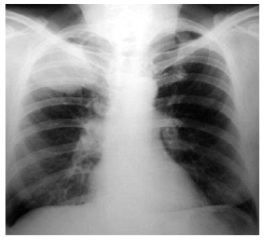
A Enoftalmia a direita.
B Exoftalmia a esquerda.
C Enoftalmia a esquerda.
D Exoftalmia a direita.
Questão 56 · Declaração de óbito DO Atestado de óbito · 4000130305Homem, 19a, chega em hospital por trauma grave de crânio, internado em UTI. No vigésimo dia foi diagnosticado choque séptico por S. aureus e evoluiu para óbito, quatro dias após. O ATESTADO MÉDICO DEVERÁ SER EMITIDO PELO:
A Médico assistente da UTI.
B Serviço Verificação de Óbito.
C Neurocirurgião.
D Instituto Médico Legal.
Questão 57 · Instrumental Cirúrgico · Cirurgia · 4000130304Você foi chamado para auxiliar um cirurgião e um assistente e será o instrumentador em uma cirurgia de uma apendicite aguda. VOCÊ POSICIONARÁ A MESA DE INSTRUMENTAL CIRÚRGICO À:
A Esquerda do paciente e à esquerda do primeiro assistente.
B Esquerda do paciente e à direita do primeiro assistente.
C Direita do paciente e do lado direito do cirurgião principal.
D Direita do paciente e do lado esquerdo do cirurgião principal.
Questão 58 · Pneumotórax Simples · Cirurgia · 4000130303Mulher, 35a, vítima de queda de motocicleta em alta velocidade, trazida por familiares para hospital. Exame físico: consciente, orientada, com escoriações na região toracoabdominal à esquerda, estável hemodinamicamente. Radiograma de tórax: normal. Tomogra a computadorizada de tórax e abdome: pneumotórax à esquerda, menor que 2 cm, e sem lesões abdominais. A CONDUTA É:
A Drenagem torácica à esquerda com dreno laminar.
B Toracocentese de alivio.
C Caso permaneça estável, repetir radiograma em 6 a 12 horas.
D Alta hospitalar caso persista assintomática.
Questão 59 · Escroto Agudo · 4000130302Adolescente, 14a, admitido no Pronto Atendimento com dor inguinal a direita com irradiação escrotal, de início súbito há cerca de 3 horas, com melhora parcial há cerca de 1 hora. O paciente referia ter participado de atividades esportivas na manhã do mesmo dia. Exame físico: Genital: testículo esquerdo elevado no escroto e fora do eixo longitudinal habitual, aumento de volume e da consistência com discreta hiperemia. A CONDUTA É
A Trauma testicular; analgesia e seguimento ambulatorial.
B Torção testicular; ultrassonografia escrotal.
C Orquite; analgesia e antibioticoterapia.
D Neoplasia; biópsia.
Questão 60 · Vias Aéreas Def initivas Cirúrgicas · Cirurgia · 4000130301Homem, 22a, vítima de colisão frontal de carro a 90 km/hora, em banco dianteiro, sem usar cinto de segurança, colidindo a cabeça contra o para brisas. Exame físico na cena: inconsciente, FR= 30 irpm, FC= 110 bpm PA= 130x80 mmHg; oximetria (máscara de oxigênio 10 litros/minuto) = 90%, trauma de face, sangue em cavidade oral e anisocoria. Após duas tentativas frustradas de intubação orotraqueal com o uso de medicações apropriadas, optou-se pela ventilação através de máscara laríngea. Admitido após 20 minutos, em ambiente hospitalar, mantinha boa saturação de oxigênio e estabilidade hemodinâmica após receber 500 ml de Ringer lactato. A CONDUTA É:
A Manter a ventilação pela máscara laríngea e tomografia computadorizada de crânio.
B Providenciar uma via aérea definitiva e tomografia computadorizada de corpo inteiro.
C Manter a ventilação pela máscara laríngea e tomografia computadorizada de corpo inteiro.
D Realizar cricotireoideostomia por punção e tomografia computadorizada de crânio.
Questão 61 · Trauma Abdominal Fechado · Cirurgia · 4000130299Homem, 18a, vítima de queda de motocicleta, trazido pelo SAMU para hospital terciário. Exame físico: FR= 22 irpm, FC= 112 bpm, PA= 94x62 mmHg, consciente, orientado, com escoriações na região toracoabdomial à direita; Membros: deformidade e edema na coxa direita. Radiograma de tórax e bacia: sem alterações; Trauma (FAST) sinais vitais: FR= 20 irpm, FC= 98 bpm, PA= 106x74 mmHg. A CONDUTA É:
A Laparotomia exploradora, pois o FAST evidenciou hemorragia interna.
B Repetir o FAST em uma hora, para observar progressão do sangramento, que pode cessar espontaneamente.
C Realizar um lavado peritoneal diagnóstico, para descartar lesão de víscera oca.
D Realizar tomografia de abdome com possibilidade de tratamento não operatório de lesão de vísceras maciças.
Questão 62 · Tratamento da Síndrome Compartimental Abdominal · Cirurgia · 4000130297Homem, 26a, vítima de múltiplos ferimentos penetrantes foi submetido à laparotomia exploradora por choque hemorrágico, recebeu 8 unidades de concentrados de hemácias e 6 litros de solução cristaloides aquecidas no intraoperatório. Interna na Unidade de Terapia Intensiva e após 12 horas apresenta-se com os seguintes parâmetros: PA= 90x65 mmHg, FC= 114 bpm, sob ventilação mecânica de FiO2= 0.80, PEEP =10 cmH2O, Oximetria de pulso= 95%, Pressão intra-abdominal (inicial)= 20mmHg, Diurese= 0,6 ml/kg/h. A CONDUTA É:
A Hidratação rigorosa e monitorização da pressão venosa central.
B Tomografia computadorizada de abdome e controle da creatinina e ureia.
C Diminuir conteúdo intraluminal e sedo analgesia adequada.
D Ultrassonografia point-of-care e aumentar PEEP se veia cava inferior colabada.
Questão 63 · Cisto Tireoglosso · Cirurgia · 4000130296Menina, 13a, em acompanhamento na Unidade Básica de Saúde devido a uma lesão nodular na região do pescoço há 8 anos, que apresenta, após quadros infecciosos respiratórios, aumento de tamanho, com dor, inchaço e saída de secreção purulenta. Ultrassonogra a de região cervical: lesão cística de conteúdo anecóico de paredes nas e regulares, localizado na linha média na topografia do osso hioide. A LESÃO ORIGINA- SE:
A No tecido subcutâneo.
B Na glândula tireoide.
C No esôfago.
D Na glândula submandibular.
Questão 64 · Retocolite Ulcerativa · 4000130295Mulher, 35a, retorna à Unidade Básica de Saúde para resultado de exames por quadro de dor abdominal, perda de peso e evacuações com sangue. Exame físico: emagrecida, descorada +/4+; restante sem alterações. Colonoscopia: aspecto granular da mucosa de forma contínua, com perda do padrão vascular e presença de erosões no segmento retosigmóide. FATORES DE RISCO PARA CÂNCER ASSOCIADOS AO QUADRO SÃO:
A Doença pan-colônica; uso de imunobiológicos.
B Intensidade da inflamação; uso de aminossalicilatos.
C Duração prolongada da doença; presença de colangite esclerosante primária.
D Emagrecimento; uso de imunossupressores.
Questão 65 · Tratamento · 4000130293Homem, 22a, trabalhador da coleta de lixo, procurou a Unidade de Pronto Atendimento com febre alta há 5 dias acompanhada de cefaleia e mialgia intensa. Evoluiu há 2 dias com exantema maculopapular, cansaço e icterícia. Exame físico: T= 38,4ºC, ictérico ++/4+; olhos: hiperemia conjuntival; membros: dor à palpação das panturrilhas. A CONDUTA É:
A Levofloxacina.
B Cefepima.
C Cloranfenicol.
D Penicilina cristalina.
Questão 66 · Medicações que provocam glicosúria inibidores de SGLT2 · 4000130291Medicações que diminuem a absorção intestinal de glicose inibidores da alf aglicosidase Homem, 57a, procura atendimento médico com episódios de vômitos e sonolência. Antecedentes pessoais: diabetes mellitus tipo 2 com diagnóstico há uma semana. Glicemia= 220 mg/dL, bicarbonato= 18 mEq/L, anion gap= 20 mEq/L, pH= 7,21. A CLASSE FARMACOLÓGICA COM POTENCIAL PARA DESENCADEAR O QUADRO CLÍNICO É:
A Inibidores de SGLT2.
B Análogos do GLP-1.
C Inibidores das alfaglicosidases.
D Inibidores da dipeptidilpeptidase 4.
Questão 67 · Epinef rina · 4000130289Mulher, 26 anos, trazida ao Pronto Socorro com dispneia súbita há 10 minutos acompanhada de prurido no corpo e inchaço dos lábios e língua. Nega comorbidades. Exame físico: PA= 100x80 mmHg, oximetria de pulso (ar ambiente)= 93%, rubor facial e edema em lábios. A ABORDAGEM INICIAL É:
A Máscara laríngea.
B Epinefrina 1:1000, na dose de 0,5 mg (0,5 ml), via intramuscular.
C Difenidramina, na dose de 50mg, via intravenosa.
D Hidrocortisona, na dose de 5 a 10 mg/kg, via intravenosa.
Questão 68 · Edema Agudo Pulmonar · 4000130286Mulher 60a, é atendida no domicilio pelo SAMU apresentando intensa falta de ar e tosse com expectoração clara há 20 minutos. Antecedentes pessoais: hipertensão arterial sistêmica e cardiopata em uso losartana, furosemida e AAS. Exame físico: PA= 240x130mmHg; FC= 115bpm; FR= 30irpm; pulmões: estertores crepitantes nas bases e campo médio. Realizada avaliação primária, suporte ventilatório, posicionamento adequado do paciente e acesso venoso. MEDICAMENTOSA A SEGUIR É:
A Nitroprussiato de sódio, clonidina e furosemida.
B Dinitrato de isossorbida, sulfato de morfina e furosemida.
C Nitroprussiato de sódio, sulfato de morfina e cedilanide.
D Dinitrato de isossorbida, nitroglicerina e digoxina.
Questão 69 · Interpretação dos parâmetros do exame · 4000130285Critérios diagnósticos de osteoporose critério densitométrico eou critério clínico Quatro mulheres, acima dos 60 anos, retornam ao Centro de Saúde com exames laboratoriais (hemograma, vitamina D, PTH, creatinina e cálcio) dentro dos valores de normalidade. Apresentam as seguintes densitometrias ósseas e radiogramas da coluna: OS DIAGNÓSTICOS DAS PACIENTES 1, 2, 3 E 4 SÃO, RESPECTIVAMENTE:
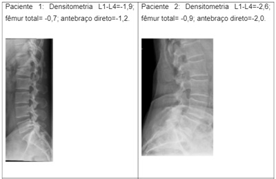
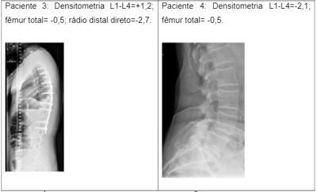
A Osteopenia; osteoporose; osteopenia, osteopenia.
B Osteopenia; osteoporose; osteoporose, osteopenia.
C Osteoporose; osteoporose; osteopenia; osteopenia.
D Osteoporose; osteoporose; osteoporose; osteopenia.
Questão 70 · Hematologia · Talassemias · 4000130283Homem, 29a, retorna a consulta com exames solicitados por apresentar sonolência às atividades laborais. Antecedentes pessoais: anemia em diversas ocasiões na infância e adolescência, tratada com reposição de ferro, de forma irregular, sem melhora completa. Hemácias= 5,80*10⁹/L; hemoglobina= 10,3g/dL, volume corpuscular médio= 57 fL, RDW= 12,8%; contagem de reticulócitos= 162*10⁹/L; leucócitos= 5,7*10⁹/L (sem alterações no diferencial); plaquetas= 189*10⁹/L; Eletroforese de hemoglobina= HbA= 93,5%, HbA₂= 4,5% e HbF= 2,0%; ferritina= 35 ng/ml e ferro sérico= 65µg/dL. O DIAGNÓSTICO É:
A Anemia por deficiência de ferro.
B Anemia da doença crônica.
C Traço talassêmico.
D Traço falciforme.
Questão 71 · Critérios diagnósticos · Tratamento medicamentoso · 4000130280Homem, 63a, assintomático, retorna à Unidade Básica de Saúde para resultado de exames. Exame físico: PA= 140x90 mmHg e IMC= 24 kg/m². Glicemia= 191 mg/d; HbA1c= 7,1%. A CONDUTA É:
A Metformina associada a agonista SGLT2.
B Agonista SGLT2.
C Metformina em mono terapia.
D Agonista do receptor de GLP1.
Questão 72 · Tuberculose · 4000130279Homem, 36a, procurou ambulatório com tosse seca há três semanas, acompanhada de dispneia na última semana. Relata perda ponderal de cinco quilos em dois meses, diminuição do apetite e queda de cabelo. Antecedentes pessoais: usuário de substâncias psicoativas. Exame físico: emagrecido, FR= 18 irpm, oximetria (ar ambiente)= 89%, orofaringe: gengivite e leucoplasia pilosa; Pulmões: estertores subcrepitantes difusos. O TRATAMENTO ANTIMICROBIANO EMPIRICO É:
A Claritromicina e etambutol.
B Isoniazida, rifampicina, pirazinamida e etambutol.
C Sulfametoxazol e trimetoprima.
D Cefepima.
Questão 73 · Diagnóstico da púrpura trombocitopênica imunológica PTI · Hematologia · 4000130278Mulher, 51a, procedente de São Luís (MA), procura Unidade Básica de Saúde após mudança para região de Campinas para retomar seguimento ambulatorial devido a plaquetopenia, diagnosticada há 6 meses em hemograma de rotina. Antecedentes pessoais: hipertensão arterial sistêmica controlada com losartana há 5 anos. Exame físico: abdome: baço percutível, mas não palpável; pele: raras petéquias em membros inferiores. Hemoglobina= 13,8 g/dL, volume corpuscular médio= 91fL, leucócitos =8,6*10⁹/L (segmentados= 69%, linfócitos 22%, monócitos 6%, eosinó los 3%), plaquetas= 30*10⁹/L. O DIAGNÓSTICO É:
A Hiperesplenismo por hipertensão portal.
B Púrpura trombocitopênica imune.
C Plaquetopenia relacionada ao uso de losartana.
D Plaquetopenia transitória relacionada a infecção viral subclínica.
Questão 74 · Tratamento · 4000130276Homem, 23a, estudante, procurou o Pronto Socorro com dor de cabeça intensa, febre não medida e vômitos há um dia. Exame físico: T= 38,9°C; neurológico: rigidez de nuca presente. Líquor: leucócitos= 3.305/mm³ (78% de neutró los, 21% de linfócitos e 1% de monócitos), proteínas= 250 mg/dL glicorraquia= 10mg/dL; glicemia= 85 mg/dL. A TERAPEUTICA ANTIMICROBIANA INTRAVENOSA É:
A Ceftriaxona.
B Cefepima.
C Penicilina cristalina.
D Cloranfenicol.
Questão 75 · Esteatose hepática · 4000130274Homem, 57a, assintomático, traz exames solicitados para admissão em seguro de saúde. Antecedente pessoal: uso de suplementos nutricionais há 2 meses; ingestão de 3 a 4 latas de cerveja/dia. Exames: AST= 106 U/L ; ALT= 51 U/L ; fosfatase alcalina= 98 U/L; gamaGT= 260 U/L ; bilirrubina= 1,0 mg/dL ; albuminemia= 3,9 g/dL ; RNI= 1,03; sorologia anti-HCV e Ag- HbS e anti-Hbc negativas; Ultrassonogra a abdominal: esteatose leve. ALÉM DE SUSPENDER A INGESTA ALCOÓLICA A CONDUTA É:
A Elastografia hepática e reavaliação laboratorial em dois meses.
B Tomografia de abdome e reavaliação laboratorial em quatro semanas.
C Realizar reação em cadeia da polimerase para hepatite B e C.
D Suspender suplementos e reavaliação laboratorial em quatro semanas
Questão 76 · Espirometria · Espirometria · 4000130272Mulher, 71a, retorna ao Ambulatório para resultado de exames. Antecedente pessoal: tabagismo 40 maços/ano. Espirometria com teste com broncodilatador (salbutamol spray): BASEADO NA ESPIROMETRIA O DIAGNÓSTICO É:
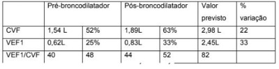
A Distúrbio ventilatório restritivo grave com resposta ao broncodilatador.
B Distúrbio ventilatório obstrutivo grave com resposta de fluxo e volume ao broncodilatador, CVF reduzida.
C Distúrbio ventilatório misto (obstrutivo grave e restritivo grave) com resposta parcial ao broncodilatador. D)
D Distúrbio ventilatório obstrutivo grave com resposta parcial ao broncodilatador.
Questão 77 · Tratamento Clínico da DRGE · Doença do Ref luxo Gastroesof ágico DRGE · 4000130271Homem, 32a, procura a Unidade Básica de Saúde com queixa de queimação retroesternal há vários meses, do estômago à base do pescoço, de intensidade moderada, principalmente à noite, de 2-3 vezes por semana. Também refere tosse crônica e rouquidão. Endoscopia digestiva alta: sem alterações. A CONDUTA É:
A Realizar pHmetria para definição diagnóstica.
B Realizar broncoscopia.
C Repetir endoscopia digestiva alta com biópsia da mucosa esofágica.
D Prescrever inibidor de bomba de prótons, medidas dietéticas e comportamentais.
Questão 78 · Tratamento · 4000130269Homem, 35a, procura Unidade de Pronto Atendimento por picada de cobra há 2 horas, tendo realizado torniquete local. Relata dor intensa no local, sudorese e ansiedade. Durante a consulta, apresentou epistaxe e hematêmese. Exame físico: Membros: perna direita com 2 orifícios pequenos de centro necrótico, intenso edema em panturrilha direita, 5 bolhas com centros enegrecidos e pequenas áreas de necrose. A CONDUTA É:
A Soro antibotrópico 6 ampolas intravenoso.
B Soro anticrotálico 20 ampolas intravenoso.
C Soro anticrotálico 10 ampolas intravenoso.
D Soro antibotrópico 12 ampolas intravenoso.
Questão 79 · Apresentações Clínicas · Manif estações clínicas · Apresentação clínica · 4000130268Mulher, 42a, em tratamento de hipertensão arterial sistêmica, de difícil controle, em uso de enalapril 40 mg/dia, nifedipina 40 mg/dia e hidroclorotiazida 12,5 mg/dia. Antecedente pessoal: acromegalia em tratamento com cabergolina. Exame físico: IMC = 28 kg/m² , PA= 160x110 mmHg. Glicemia de jejum= 101 mg/dL; colesterol total= 190 mg/dL; triglicerídeos= 152 mg/dL; creatinina= 0,9 mg/dL; sódio= 133 mEql/L, potássio= 2,6 mEq/L. DEVE-SE INVESTIGAR:
A Hiperaldosteronismo.
B Doença de Addison.
C Feocromocitoma.
D Macroadenoma de hipófise.
Questão 80 · Tratamento · Cardiologia · 4000130267Homem, 62a, comparece à Unidade de Emergência com queixa de palpitação torácica durante a última semana. Nega dor torácica, falta de ar, náusea ou vômito. Conta episódios semelhantes há um mês que melhoraram espontaneamente. Antecedentes pessoais: hipertensão arterial essencial há 20 anos. Exame físico: PA= 120x80 mmHg; FC= 139 bpm; FR= 17 irpm e saturação de oxigênio (ar ambiente)= 97%. O ECG: A CONDUTA É:
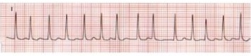
A Administrar metoprolol e iniciar anticoagulação.
B Cardioversão elétrica sincronizada (120J) e posteriormente, anticoagulação.
C Reverter ritmo com adenosina e, se refratário, cardioversão elétrica sincronizada.
D Administrar amiodarona e iniciar anticoagulação.
Questão 81 · Declaração de Astana · 4000102120Na comemoração dos 40 anos da Declaração de Alma-Ata, realizou-se a Conferência Global sobre Atenção Primária à Saúde (APS) em Astana, em 2018. A DECLARAÇÃO DE ASTANA:
A Reforça a importância dos sistemas universais de saúde de financiamentoeminentemente público.
B Enfatiza a cobertura universal em saúde (universal health coverage – UHC).
C Supera a de Alma-Ata, em seus princípios de justiça social e de concepção de APSintegral.
D Tem como lema “Saúde para todos no ano 2050”.
Questão 82 · Declaração de óbito DO Atestado de óbito · 4000102114Homem, 44a, chega ao Pronto Socorro com quadro de hipotensão arterial, extremidades frias e pulso rápido. A esposa refere que o paciente caiu de bicicleta no mesmo dia pela manhã e bateu o tronco sobre a quina da calçada, apresentando dor intensa na região hipocôndrio esquerdo. Antecedentes pessoais: soropositivo para HIV, internação por pneumonia intersticial, com alta há 8 dias. Evolui para óbito em menos de duas horas. O MÉDICO RESPONSÁVEL POR ESTE ATENDIMENTO DEVE:
A Orientar a família a procurar o médico assistente do Centro de Saúde.
B Preencher a Declaração de Óbito.
C Encaminhar o corpo para o Serviço de Verificação de Óbitos.
D Encaminhar o corpo para o Instituto Médico Legal.
Questão 83 · Princípios e Diretrizes do Sistema Único de Saúde SUS · 4000102106O avanço da biotecnologia e suas aplicações na prática médica tornou-se um novo paradigma na assistência à saúde. Avanços tecnológicos como: de suporte de vida; de diagnóstico, de técnicas cirúrgicas, de transcendência, de nanotecnologia, de telemedicina foram desenvolvidos por um complexo médico-industrial. A saúde como área de negócio, atrativa por sua alta lucratividade, é geradora de con itos de interesse. O PRINCÍPIO DO SUS COMPROMETIDO NESTE CENÁRIO É O DA:
A Acessibilidade.
B Equidade.
C Integralidade.
D Universalidade.
Questão 84 · Síf ilis congênita · 4000102096O Brasil é país signatário da resolução da Organização Pan-Americana da Saúde que recomenda a eliminação da sí lis congênita, importante causa de perda fetal e mortalidade perinatal. SOBRE ESTA DOENÇA É CORRETO AFIRMAR QUE:
A Com as medidas adequadas durante o pré natal, é uma doença evitável.
B O maior número de casos ocorre nas regiões Norte e Nordeste do país.
C A remissão espontânea é frequente.
D O uso de penicilina benzatina reduziu sua incidência no Brasil.
Questão 85 · Asma ocupacional x asma relacionada ao trabalho · Asma ocupacional · 4000102085Homem, 48a, relata dispneia aos grandes esforços há dois anos e chiado no peito há seis meses. Nega episódios semelhantes anteriormente. Atualmente faz móveis por encomenda na garagem de sua residência, local pouco ventilado. Trabalhou como carpinteiro uma fábrica de móveis por 12 anos. O DIAGNÓSTICO É:
A Asma brônquica.
B Asma relacionada ao trabalho.
C Asma ocupacional.
D Pneumonite alérgica.
Questão 86 · Previdência Social · 4000102072Notif icação em Saúde do Trabalhador no Sistema Nacional de Agravo de Notif icação SINAN Comunicação de Acidente de Trabalho CAT Homem, 43a, trabalhador autônomo há 10 anos. Procura atendimento médico com queixa de dor lombar há dois meses, de início súbito, após levantar uma peça de 35 kg no trabalho. Não conseguiu trabalhar durante esse período devido à dor. Exame físico: contratura paravertebral à direita; sinal de Lasègue: positivo membro inferior direito. DO PONTO DE VISTA DE DIREITOS DO TRABALHADOR VOCÊ DEVE:
A Solicitar abertura de CAT e fazer relatório médico para auxílio acidente.
B Solicitar abertura de CAT e fazer relatório médico para auxílio previdenciário.
C Notificar no SINAN e fazer relatório médico para auxílio acidente.
D Notificar no SINAN e fazer relatório médico para auxílio previdenciário.
Questão 87 · Estado de Estresse PósTraumático Transtorno de Estresse PósTraumático TEPT · 4000102063Transtorno do Estresse PósTraumático TEPT Homem, 53a, procura serviço médico com queixas de tonturas, zumbidos e insônia há seis meses. Relaciona os sintomas com a função de motorista de ônibus urbano há 15 anos. Diz que o trabalho é cansativo e relatou que há um ano foi vítima de um assalto a mão armada e desmaiou. Desde então, não consegue trabalhar devido os zumbidos e tampouco dormir, pois acorda com lembranças daquele episódio. O DIAGNÓSTICO É:
A Síndrome vestíbulo coclear relacionada ao trabalho.
B Transtorno de estresse pós-traumático.
C Depressão.
D Síndrome de pânico.
Questão 88 · Outras Resoluções Pareceres e Recomendações do Conselho Federal de Medicina CFM · 4000102051Com o crescente uso das novas tecnologias de informação e comunicação, incluindo inúmeras mídias sociais (Facebook, Twiter, WhatsApp e similares), o Conselho Federal de Medicina (CFM) deliberou resoluções normativas e atualizou o Manual da Comissão de Divulgação de Assuntos Médicos. É CORRETO AFIRMAR QUE:
A A normatização busca impedir os excessos do sensacionalismo, da autopromoção e damercantilização do ato médico.
B As resoluções do CFM constituem mecanismos normativos que orientam a práticaprofissional, sem comprometer a autonomia dos médicos.
C O “Manual de publicidade médica” é um instrumento normativo que busca aplicar osfundamentos e preceitos éticos da profissão.
D Ainda que não seja a principal motivação, as resoluções citadas contém caráter de censura e visam cercear o direito do médico.
Questão 89 · Ortotanásia · 4000102041A manifestação da vontade do paciente, expressa antecipadamente, garantindo-lhe o direito de decidir como deseja conduzir os últimos momentos de sua vida busca resgatar sua dignidade e sua autonomia. De acordo com Conselho Federal de Medicina, nas decisões sobre cuidados e tratamentos de pacientes que se encontram incapazes de comunicar- se, ou de expressar de maneira livre e independente suas vontades, o médico levará em consideração suas diretivas antecipadas da vontade. TAIS MEDIDAS PODEM SER CONSIDERADAS COMO UMA PRÁTICA DE:
A Eutanásia.
B Distanásia.
C Ortotanásia.
D Calotanásia.
Questão 90 · Determinação Social da SaúdeDeterminantes Sociais da Saúde DSS · 4000102032O Núcleo de Saúde Coletiva constatou que nos últimos cinco anos 67,5% entre as mulheres analfabetas ou com ensino fundamental incompleto e 91,4% entre mulheres com ensino superior completo da população alvo realizaram coleta de Exame de Citologia Oncológica de Colo Uterino. ESSES DADOS MOSTRAM:
A Ação de promoção de saúde.
B Desigualdade social em saúde.
C Ação local da vigilância sanitária.
D Ação de prevenção.
Questão 91 · Prevenção Quaternária · 4000099827Mulher, 90a, foi levada ao Pronto Socorro por episódio único de vômito e desidratação. Realizados tomogra a de abdome, exames laboratoriais, endoscopia e colonoscopia, com resultados normais. Antecedentes pessoais: síndrome demencial avançada. Após a internação, não foi mais capaz de deambular. A PROTEÇÃO CONTRA INTERVENÇÕES DESNECESSÁRIAS CORRESPONDE À PREVENÇÃO:
A Quaternária.
B Terciária.
C Primária.
D Secundária.
Questão 92 · Estudos Ecológicos · 4000099815Um estudo analisou a tendência temporal das taxas de internação de maiores de 60 anos por doenças respiratórias em uma região, antes e após a implantação das campanhas de vacinação contra a influenza. O DELINEAMENTO UTILIZADO FOI:
A Estudo de prevalência.
B Ensaio clínico.
C Estudo de coorte prospectivo.
D Estudo ecológico.
Questão 93 · Mortalidade Materna · 4000099804O COEFICIENTE DE MORTALIDADE MATERNA É:
A Total de mortes de mulheres durante a gravidez e o parto dividido pelo total denascidos vivos, vezes 100 mil.
B Total de mortes de mulheres durante a gravidez, parto e/ou ao período pós-partoimediato (7 dias) dividido pela totalidade das mulheres em idade fértil, vezes 100 mil.
C Total de mortes de mulheres durante pré-natal, parto e/ou puerpério (42 dias) divididopelos nascidos vivos, vezes 100 mil.
D Total de mortes durante a gravidez, parto e/ou período pós-parto imediato (10 dias)dividido pela totalidade de mulheres grávidas, vezes 10 mil.
Questão 94 · Odds Ratio ou Razão de Chances · 4000099791Em área endêmica para hepatite C, foi realizado um estudo para verificar a associação entre hepatocarcinoma e infecção pelo vírus da hepatite C. Utilizando os dados da tabela abaixo: A CHANCE DE UM INDIVÍDUO INFECTADO PELO VÍRUS DA HEPATITE C APRESENTAR HEPATOCARCINOMA, EM RELAÇÃO AO NÃO INFECTADO É DE:
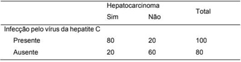
A 4 vezes maior.
B 2,5 vezes maior.
C 12 vezes maior.
D 8 vezes maior.
Questão 95 · Estudos de Coorte · 4000099776Um estudo investigou a associação entre o primeiro registro do índice de massa corporal (IMC) e a sobrevida até o diagnóstico de 22 tipos de cânceres de localização mais comuns, em população registrada em banco de dados de atendimento clínico. A sobrevida foi comparada entre os grupos de pacientes com diferentes faixas de IMC. Observaram- se resultados da associação entre IMC e incidência de alguns tipos de câncer: fígado (Razão de Riscos =1,12; IC95% 1,12– 1,27), cólon (Razão de Riscos =1,10; IC95% 1,07–1,13), mama pré-menopausa (Razão de Riscos =0,89; IC95% 0,86– 0,92), e melanoma (Razão de Riscos =0,99; IC95% 0,96-1,02), bexiga (Razão de Riscos =1,03; IC95% 0,99-1,06), ovário (Razão de Riscos =1,09; IC95% 1,04-1,14). A heterogeneidade dos efeitos sugere diferentes mecanismos associados a diferentes tipos e locais de cânceres. O DELINEAMENTO UTILIZADO FOI:
A Ensaio clínico sobre o risco de mortalidade entre tipos de câncer.
B Estudo Caso (cânceres) Controle (não cânceres).
C Estudo Transversal sobre cânceres e IMC.
D Estudo de Coorte sobre ocorrência de cânceres entre expostos e não expostos.
Questão 96 · Sarampo · 4000099765A vacinação contra sarampo tem sido revisada no país devido ao crescente número de casos. ASSINALE A ALTERNATIVA CORRETA:
A Os menores de 6 meses de idade tem maior susceptibilidade à infecção pelo vírus dosarampo devido à baixa cobertura vacinal.
B A ampliação da vacinação para maiores 6 meses de idade em campanhas se deve aoacesso precário da população carente às unidades de saúde.
C A vacinação para os maiores de 6 meses de idade não substitui a vacinação aos 12meses de idade em crianças.
D A maior parte dos adolescentes e adultos jovens já apresentam imunidade contrasarampo.
Questão 97 · Vulvovaginites · 4000099756Mulher, 35a, vem com queixa de corrimento vaginal abundante há 30 dias. Exame ginecológico: secreção branco- acinzentado em pequena quantidade, pH=4,5, teste das aminas positivos e ausência de hiperemia de paredes vaginais. Bacterioscopia vaginal (ANEXO A): OS ACHADOS HISTOLÓGICOS QUE CONFIRMAM O DIAGNÓSTICO SÃO:
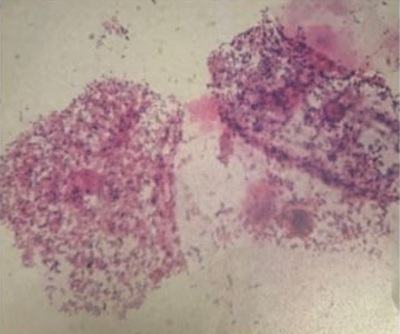
A Hifas e leveduras.
B Excesso de lactobacilos e células-guia (clue cells).
C Células-guia (clue cells) e ausência de leucócitos
D Excesso de bactérias e de lactobacilos.
Questão 98 · Diagnóstico · Controle glicêmico · 4000099731Mulher, 24a, G1P0C0A0, vem para segunda consulta pré-natal com idade gestacional de 10 semanas. Antecedente pessoal: obesidade grau 3. Glicemia de jejum= 97 mg/dL. ALÉM DE ORIENTAÇÃO DE HÁBITOS SAUDÁVEIS, A CONDUTA É:
A Curva glicêmica gestacional.
B Perfil glicêmico.
C Repetir glicemia de jejum.
D Iniciar insulina.
Questão 99 · Indicações e contraindicações · 4000099719Mulher, 30a, G2P1C1A0, idade gestacional 40 semanas e 3 dias procura maternidade porque realizou ecogra a que evidenciou índice de líquido amniótico (ILA) de 30 mm, peso fetal estimado de 3780g, feto cefálico, Doppler normal. Nega perda de líquido por via vaginal. Exame ginecológico: especular: pH= 4,5, teste de esforço e prova de cristalização negativos, toque vaginal: colo impérvio. A CONDUTA É REALIZAR:
A Preparo de colo com sonda Foley e indução de parto com ocitocina
B Coleta de cultura para Estreptococos do Grupo B e parto cesárea.
C Retorno em 4 dias para indução de parto.
D Indução de parto com misoprostol.
Questão 100 · Insuf iciência istmocervical · 4000099714Mulher, 36a, G4P1A2C0, idade gestacional de 14 semanas. Antecedentes Obstétricos: parto prematuro às 26 semanas e abortos com 18 e 15 semanas. Ultrassonogra a com 12 semanas: avaliação morfológica fetal normal e colo uterino medindo 35 mm, sem sinais de afunilamento ou sludge. A CONDUTA É:
A Amoxicilina clavulanato por 7 dias e repetir ecografia com 20 semanas.
B Amoxicilina clavulanato por 7 dias e pré-natal de rotina.
C Progesterona vaginal e pré-natal de rotina.
D Progesterona vaginal e cerclagem de colo uterino.
Questão 101 · Eclâmpsia · 4000099701Mulher, 33a, G3P2C0A0, idade gestacional de 37 semanas, chega à Maternidade após crise convulsiva há 1 hora (tônico- clônica generalizada). Refere dor de cabeça de forte intensidade há 3 dias. Antecedentes pessoais: primeiro lho com o atual parceiro, nega complicações em gestações anteriores. Exame físico: PA= 142x86 mmHg, FC= 86 bpm, FR= 22 irpm; Edema em face, mãos, membros inferiores, exame neurológico: normal. Exame ginecológico: altura uterina 35cm, ausência de contrações, feto cefálico. Plaquetas= 230.000 mm³ , RNI= 1,02, creatinina= 0,9mg/dL, AST= 15 UI/L, bilirrubina total= 0,8 mg/dL, relação proteína/creatinina urinária= 0,4. Cardiotocografia: A CONDUTA É:
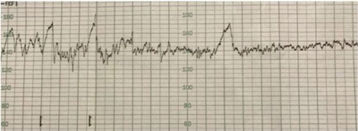
A Sulfato de magnésio e parto cesárea imediato.
B Tomografia computadorizada de crânio e parto cesárea imediato.
C Sulfato de magnésio e indução de parto.
D Tomografia computadorizada de crânio e indução de parto.
Questão 102 · BIRADS 5 · 4000099686Mulher, 55a, procura atendimento médico por alteração de exames de rotina. Mamogra a: nódulo na mama esquerda, irregular e microlobulado, medindo 18mm. Ultrassonogra a: nódulo hipoecóico, irregular e microlobulado, BIRADS® 5. A CONDUTA É:
A Punção aspirativa por agulha fina.
B Biópsia percutânea de fragmento “core-biopsy”.
C Biópsia incisional com avaliação intra-operatória
D Biópsia excisional seguida de congelação
Questão 103 · Aborto legal no Brasil · 4000099676Mulher, 40a, procura o serviço para orientação sobre aborto legal. Refere estar na sétima semana de gestação, após estupro, sem registro de Boletim de Ocorrência. Antecedente pessoal: pro ssional do sexo, faz uso de preservativos em todas as relações profissionais. A ORIENTAÇÃO É QUE ELA:
A Não tem direito ao aborto legal, por impossibilidade da confirmação do estupro.
B Deve registrar queixa na Delegacia de Defesa da Mulher para o aborto legal.
C Deve obter autorização judicial para ter direito ao aborto legal.
D Tem direito ao aborto legal mesmo sem a realização do Boletim de Ocorrência.
Questão 104 · Fatores de proteção · Prevenção · 4000099665Mulher, 41a, G4P4C0A0, comparece ao Centro de Saúde na campanha Outubro Rosa solicitando orientações para prevenção do câncer de mama. Antecedentes pessoais, obstétricos e ginecológicos: menarca aos 13 anos, amamentou cada lho por pelo menos seis meses, laqueada, consumo de quatro latas de cerveja aos nais de semana. Antecedentes familiares: nega antecedente de doenças neoplásicas. Exame físico: IMC= 30Kg/m², exame de mamas e axilas: sem alterações. ALÉM DO CONTROLE DE GANHO PONDERAL E DAS ORIENTAÇÕES SOBRE O CONSUMO DE ÁLCOOL, EM CONSONÂNCIA COM O PRECONIZADO PELO MINISTÉRIO DA SAÚDE EM RELAÇÃO À PREVENÇÃO DO CÂNCER DE MAMA, A CONDUTA É:
A Acompanhamento clínico anual.
B Mamografia bienal.
C Ressonância magnética bienal.
D Ultrassonografia de mamas para o retorno em 2 meses.
Questão 105 · Tratamento na HPP · 4000099653Mulher, 32a, G5P4C0A0, idade gestacional= 39 semanas + 5 dias, evoluiu para parto normal, sob analgesia peridural, com recém-nascido de 4100g. Revisão de canal de parto sem lacerações. A dequitação ocorreu após 60 minutos e, nesse momento, iniciou sangramento abundante via vaginal. Exame físico: PA= 108x62 mmHg; FC= 115 bpm, pulsos nos e mucosas descoradas ++/4+. DIANTE DESTE QUADRO, ALÉM DA REPOSIÇÃO VOLÊMICA, A CONDUTA IMEDIATA É:
A Realizar manobra de Taxe, uterotônicos e ácido tranexâmico.
B Massagem uterina, uterotônicos, ácido tranexâmico e curagem/curetagem uterina.
C Realizar manobra de Taxe e inserção de balão intrauterino.
D Realizar laparotomia exploradora para sutura de B-Lynch.
Questão 106 · Abortamento completo · 4000099637Mulher, 22a, primigesta, com idade gestacional de oito semanas (conforme data da última menstruação e ultrassonogra a precoce transvaginal de seis semanas). Refere sangramento via vaginal abundante há 2 horas, associado a cólica intensa. Exame especular: moderada quantidade de sangue coletado em fórnice posterior. Toque vaginal: útero intrapélvico sem dor a palpação anexial; colo grosso, posterior e impérvio. Ultrassonogra a transvaginal: útero de 140 cm³ , linha endometrial de 10 mm, anexos sem alterações. O DIAGNÓSTICO É:
A Gestação incipiente.
B Abortamento incompleto.
C Gestação ectópica.
D Abortamento completo.
Questão 107 · Quadro clínico · Critérios diagnósticos · 4000099628Mulher, 18a, nuligesta, procura atendimento médico com ciclos menstruais irregulares de 90 -120 dias desde a menarca. Antecedente pessoal: menarca aos 11 anos. Exame físico: IMC= 26,7Kg/m², índice Ferriman-Gallwey= 9. PARA REALIZAR O DIAGNÓSTICO É NECESSÁRIO:
A Elevação sérica de insulina e teste de tolerância à glicose alterado.
B Presença da relação LH/FSH > 2 e medida da circunferência abdominal > 88 cm.
C Padrão menstrual de anovulação crônica e hiperandrogenismo clínico e/ou bioquímico.
D Aumento do volume ovariano com presença de folículos periféricos à ultrassonografia.
Questão 108 · Rotura uterina · 4000099615Mulher, 35a, G5P4C1A0, com último parto há 10 anos. É admitida em trabalho de parto, com dilatação de 8 cm, bolsa rota e polo cefálico apoiado. Antecedente pessoal: diabetes gestacional controlado com dieta. Após 3 horas, evoluiu com dilatação total, apresentação no plano -3 de De Lee e 5 contrações fortes em 10 minutos. O exame clínico evidencia a situação abaixo: Subitamente, apresenta quadro de sangramento vaginal em moderada quantidade e queda da pressão arterial acompanhada de taquicardia. O DIAGNÓSTICO É:

A Descolamento prematuro de placenta.
B Rotura uterina.
C Placenta prévia marginal.
D Laceração de trajeto.
Questão 109 · HCVRNA · Obstetrícia · 4000099605Gestante de 11 semanas inicia pré-natal e realiza teste rápido para hepatite C com resultado positivo e ELISA anti HCV também positivo. A CONDUTA É:
A Repetir a sorologia para hepatite C com 28 semanas.
B Iniciar tratamento antiviral após 12 semanas.
C Realizar reação de cadeia de polimerase para hepatite C.
D Indicar cesárea eletiva com 39 semanas.
Questão 110 · Interações medicamentosas · 4000099594Mulher, 35a, G5P4C0A1, vem à Unidade Básica de Saúde para orientação de anticoncepção. Antecedente pessoal: tuberculose em tratamento com rifampicina e isoniazida. Paciente não deseja uso de método contraceptivo intrauterino. O MÉTODO INDICADO É:
A Injetável combinado mensal.
B Implante de etonogestrel.
C Anticoncepcional oral de progestágeno.
D Anticoncepcional oral combinado.
Questão 111 · Métodos hormonais combinados · 4000099583Mulher, 20a, comparece à Unidade Básica de Saúde para esclarecer dúvidas com relação ao uso de anticoncepcional oral combinado (ACO). Refere fazer uso regular de etinilestradiol 0,02 mg e levonorgestrel 0,10 mg há 6 meses, porém esqueceu de iniciar nova cartela há 3 dias. Refere relação sexual 3 vezes na semana e não deseja engravidar. A CONDUTA É:
A Retornar uso do ACO habitual, pois ainda não ocorreu a ovulação (primeira fase do ciclo).
B Prescrever etinilestradiol 0,03 mg e levonorgestrel 0,15 mg por dia por 21 dias, pois aumentando a dosagem do ACO pode-se prevenir a ovulação.
C Prescrever os três comprimidos de ACO esquecidos (dose única) para evitar a ovulação.
D Prescrever levonorgestrel 15 mg dose única para inibir possível ovulação.
Questão 112 · Incontinência urinária · 4000099573Mulher, 40a, G2P2C0A0, vem encaminhada da Unidade Básica de Saúde com queixa de perda urinária precedida de urgência há 3 anos. Refere frequência urinária de 9 vezes durante o dia e 1 vez à noite. Nega enurese noturna. Realizou sioterapia perineal e mudanças comportamentais sem melhora significativa do quadro. Antecedentes pessoais: glaucoma e diabetes mellitus há 3 anos. Medicamentos em uso: Metformina e colírio de pilocarpina. Exame ginecológico: não apresenta prolapsos genitais ou perdas urinárias durante a manobra de valsava. A CONDUTA É:
A Beta 3 adrenérgico oral.
B Anticolinérgico oral.
C Cirurgia de Sling.
D Cirurgia de Burch.
Questão 113 · Clampeamento tardio do cordão · 4000099564Criança a termo, nasce com boa vitalidade, chorando, tônus muscular em exão. O recém-nascido é colocado sobre o abdome da mãe. O CLAMPEAMENTO DO CORDÃO DEVE SER REALIZADO:
A Imediatamente após o nascimento.
B Até 30 segundos após o nascimento.
C Entre 30 a 60 segundos após o nascimento.
D De um a três minutos após o nascimento.
Questão 114 · Apresentação e Diagnóstico Clínicos · 4000099555Menina, 3 meses, em consulta de rotina de puericultura. Mãe refere que há uma semana vem tendo di culdade progressiva para trocar as fraldas. Antecedente gestacional: pré-natal sem intercorrências, parto cesárea por apresentação pélvica. Exame físico: assimetria de pregas glúteas, limitação da abdução da articulação do quadril esquerdo. O DIAGNÓSTICO É:
A Displasia do desenvolvimento do quadril.
B Artrogripose.
C Sequela de tocotraumatismo.
D Epifisiolistese.
Questão 115 · Tratamento · Tratamento da anemia f erropriva · 4000099546Lactente, 11 meses, apresenta-se com mucosas descoradas e palidez cutânea. Está inapetente e com geofagia. Dieta essencialmente láctea e baixa ingesta de alimentação sólida. Hb= 9,5 g/dL Htc= 29%; Reticulócitos= 1,7%; VCM= 62 ; HCM= 22pg; RDW= 18%; Ferritina= 8ng/mg. A CONDUTA É:
A Investigar alergia à proteína do leite de vaca.
B Investigar parasitose.
C Solicitar eletroforese de hemoglobina.
D Prescrever sulfato ferroso.
Questão 116 · Diagnóstico · 4000099536Lactente, 10 meses, com febre, tosse e coriza há 4 dias e aparecimento de exantema maculopapular morbiliforme com início nas orelhas descendo para o tronco hoje. Vacinas: todas as indicadas até os 6 meses de idade. Exame físico: T= 39ºC; Orofaringe: lesões de 2 a 3 mm de diâmetro, discretamente elevadas, de cor branca com base eritematosa, localizadas na região interna da mucosa oral. AO INTERNAR, DEVERÁ SER ESTABELECIDA A SEGUINTE PRECAUÇÃO:
A Padrão.
B Aerossóis.
C Gotículas.
D Contato.
Questão 117 · Agente etiológico · Pediatria · 4000099526Menino, 4ª queixa de prurido perianal, exacerbado a noite com sono intranquilo e irritabilidade. O irmão mais velho já teve sintomas semelhantes há mais ou menos um mês. Exame físico: sem alterações. O AGENTE ETIOLÓGICO É:
A Trichuris trichiura.
B Enterobius vermicularis.
C Ancylostoma duodenalis.
D Strongyloides stercoralis.
Questão 118 · Intertrigo por cândida · Dermatite de f raldas · 4000099517Lactente, 3 meses, há 15 dias com eritema intenso em nádegas e porções internas das coxas. Há dois dias com piora do eritema e aparecimento de lesões-satélite papulovesiculares minúsculas. A CONDUTA É:
A Limpeza da área com água bicarbonatada, utilizar oxido de zinco a cada troca defraldas e suspensão do uso de fraldas descartáveis.
B Limpeza da área com água, deixar a criança o maior tempo possível sem fraldas ecorticosteroide tópico.
C Limpeza da área com água, deixar a criança o maior tempo possível sem fraldas eagente antifúngico tópico.
D Limpeza da área com água bicarbonatada, corticosteroide tópico e suspensão do usode fraldas descartáveis.
Questão 119 · Abordagem · 4000099509Menino, 9a, é atendido na Unidade Básica de Saúde. Os pais referem que é o mais baixo da classe e que não está crescendo. É hígido, ativo e tem uma alimentação saudável. Exame físico: estatura está abaixo do percentil 3 da curva de crescimento adotada pelo Ministério da Saúde. A CONDUTA É:
A Verificar a velocidade de crescimento nos últimos 6 meses, canal de crescimento e solicitar radiograma de mão e punho para avaliação de idade óssea.
B Verificar o canal parental e orientar os pais para retorno em 6 meses.
C Confirmar a baixa estatura para idade e a partir dos dados antropométricos,tranquilizar a mãe que no estirão da puberdade isto será corrigido.
D Confirmar a baixa estatura abaixo do percentil 3 para idade, solicitar retorno em 6meses e pedir para trazer dosagem de TSH e T4 livre.
Questão 120 · Tratamento · 4000099497Menina, 2a, é trazida pela mãe à Unidade de Emergência por febre há 7 dias, aparecimento de feridas na boca e secreção ocular não purulenta há 3 dias. Vacinação em dia. Exame físico: FR= 22 irpm, FC= 132 bpm, T=38,9°C, descorado+/4+, anictérico; pescoço: linfonodo palpável em cadeia cervical direita 3-4 cm; pele: exantema polimorfo principalmente em tronco; olhos: hiperemia ocular não purulenta bilateralmente; orofaringe: língua em framboesa e queilite; membros: eritema em palmas de mão e plantas de pé. A CONDUTA É:
A Penicilina benzatina.
B Hidratação.
C Imunoglobulina humana.
D Vitamina A.
Questão 121 · Plano A · 4000099484Menino, 5a, é levado a Unidade Básica de Saúde com cinco a seis evacuações/dia, fezes liquidas sem sangue ou muco há dois dias. Exame físico: FC= 96 bpm, FR= 18 irpm, PA= 98x64 mmHg, T= 38,4oC, perfusão de dois segundos, mucosas úmidas. O TRATAMENTO DO QUADRO É:
A O uso de probióticos.
B A correção da alcalose metabólica.
C A reposição das perdas hidroeletrolíticas.
D O uso de antibióticos.
Questão 122 · Epidemiologia · 4000099475Menino, 2a, apresenta dor abdominal e 5-6 evacuações líquidas por dia, com muco e sangue, há 5 dias. Há 24 horas evoluiu com piora progressiva do estado geral, palidez e diminuição da diurese. Exame físico: apático, irritado, mucosas úmidas, perfusão de 3 segundos, descorado +++/4+, palidez intensa, icterícia +/4+; FR= 56 irpm, FC= 140 bpm, T= 36,8° C, PA= 122x76 mmHg; edema de membros inferiores ++/4+. O AGENTE ETIOLÓGICO DESENCADEANTE DO QUADRO É:
A Escherichia coli.
B Rotavírus.
C Salmonela spp.
D Streptococcus do Grupo B.
Questão 123 · Etiologia e Epidemiologia · 4000099466Menino, 18 meses, é trazido à Unidade de Emergência por estar com febre há 2 dias, associada a coriza e tosse de “cachorro” que piorou esta noite. Exame físico: T=38,2°C; FC= 120 bpm; FR = 54 irpm; perfusão periférica menor que dois segundos; irritado, com hiperextensão do pescoço, estridor inspiratório aos esforços, retração de fúrcula e tiragem intercostal; pulmão: murmúrio vesicular diminuído globalmente. O AGENTE ETIOLÓGICO É:
A Metapneumovírus.
B Adenovírus.
C Haemophilus influenzae não tipável.
D Parainfluenza.
Questão 124 · Diagnóstico · 4000099458Menino, 3a, é trazido ao Pronto Socorro por dor no membro inferior direito e di culdade para deambular há 1 dia. Nega febre. Antecedente familiar: irmão com quadro de resfriado há 10 dias. Exame físico: T= 36,8°C; FR= 16irpm; FC= 90bpm; membros: limitação a rotação interna e externa do quadril direito, não realiza extensão completa do membro inferior direito. O DIAGNÓSTICO É:
A Febre reumática.
B Doença de Legg-Calve-Perthes.
C Sinovite transitória.
D Artrite idiopática juvenil.
Questão 125 · Estenose Hipertróf ica do Piloro · Diagnóstico · 4000099448Menino, 60 dias de vida, é trazido para consulta de puericultura. A mãe refere que há cinco dias o lho está irritado, mamando mais vezes, com aumento das regurgitações e parece estar sempre com fome. Relata diminuição da diurese e das evacuações. Antecedentes pessoais: aleitamento materno exclusivo com bom ganho ponderal até a última consulta. Exame físico: ganho ponderal de 10g/dia no último mês, com altura e perímetro cefálico dentro do esperado; corado, hidratado, irritado; abdome: distendido. Durante o exame, quando mamou, regurgitou rapidamente. A CONDUTA É:
A Solicitar ultrassonografia de abdome.
B Solicitar urocultura.
C Reavaliar a técnica de amamentação.
D PHmetria esofágica de 24 horas.
Questão 126 · Intoxicações Exógenas · 4000099439Menina, 13a, é encaminhada à Unidade de Emergência Pediátrica com sonolência, fala sem nexo, movimentos irregularidades e di culdade de marcha há 3 dias, sempre no mesmo horário, por volta de meio dia e melhora ao longo do dia. Antecedentes familiares: irmão de 5 anos em tratamento de epilepsia. Exame físico: FC= 110 bpm; FR= 24 irpm; PA= 100x60 mmHg. Neurológico: sonolenta, desorientada, nistagmo bilateral, força muscular avaliação prejudicada, reflexos presentes; marcha de base alargada, cambaleante.
A Tumor de cerebelo.
B Intoxicação exógena.
C Epilepsia.
D Transtorno neurovegetativo somatoforme.
Questão 127 · Ref luxo Gastroesof ágico RGE · Pediatria · 4000099429Menina, cinco meses, é levada à Unidade Básica de Saúde pela avó por apresentar 15 episódios de regurgitações/dia de leite. Peso ao nascimento =3.250g. Peso atual = 6.850g. A REGURGITAÇÃO DESSA LACTENTE É UMA CONDIÇÃO:
A Que deve ser tratada com ranitidina ou omeprazol.
B Que pode levar a baixo ganho ponderal e requer decúbito elevado.
C Decorrente de relaxamentos transitórios do esfíncter esofágico.
D Frequente e inócua até os 12 meses.
Questão 128 · Síndrome de Lof f ler · Pneumonia de origem parasitária · Pediatria · 4000099417Menino, 4a, é atendido por história de cinco pneumonias, todas com resolução total. Os episódios foram caracterizados por febre baixa, cansaço e tosse seca que durava uma semana e di cultava o sono. Os radiogramas de tórax no diagnóstico evidenciavam opacidade heterogênea (alvéolo-intersticial) em diferentes campos pulmonares a cada episódio. Radiogramas de tórax de controle normais. OS EXAMES PARA A CONFIRMAÇÃO DIAGNÓSTICA SÃO:
A Prova tuberculínica e cultura de escarro.
B Hemograma e parasitológico de fezes.
C IgE total e tomografia de tórax.
D Sorologia para Bordetella pertussis e Mycoplasma pneumoniae.
Questão 129 · Diagnóstico · 4000099408Mulher, 32a, procura Unidade de Pronto Atendimento por dor em pontada, contínua e progressiva no quarto e quinto dedos da mão direita há 1 mês, com piora há 3 dias associada a palidez e parestesia ao estender roupas no varal, sem melhora com analgésicos. Exame físico: PA= 124x76 mmHg, FC= 87 bpm, FR= 17 irpm, Oximetria de pulso (ar ambiente)= 99%. PARA O DIAGNÓSTICO DEVE-SE REALIZAR A MANOBRA DE:
A Adson.
B Phalen.
C Neer.
D Cattell Braasch.
Questão 130 · Fisiopatologia · Conduta · Def inição · 4000099400Homem, 29a, está internado devido a fraturas fechadas de fêmur e tíbia, com tala em membro inferior. No segundo dia de internação evolui com rebaixamento do nível de consciência, petéquias em região esternal no tórax, T= 39ºC, PA= 80x45 mmHg, FC= 130 bpm, FR= 32 irpm, Oximetria de pulso (máscara 2L/min)= 95%. Tomogra a computadorizada de tórax: O DIAGNÓSTICO É:
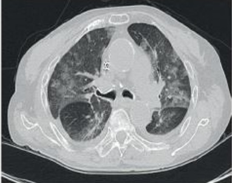
A Tromboembolismo pulmonar.
B Pneumonia intra-hospitalar.
C Síndrome da embolia gordurosa.
D Pneumotórax bilateral.
Questão 131 · Diagnóstico e Estadiamento · 4000099380Homem, 57a, procura Unidade Básica de Saúde referindo sangue na urina há 3 semanas. Nega dor abdominal, disúria ou urgência miccional. Antecedentes Pessoais: diabetes mellitus, tabagismo 40 maços/ano, trabalha há 30 anos em fábrica de tinta. Exame físico: PA= 119x76mmHg, FC= 89bpm, FR= 18irpm. Abdome: plano, normotenso, descompressão brusca dolorosa negativa, ausência de massas palpáveis, Sinais de Murphy e Giordano ausentes. Exame sumário de urina: Hemácias= 1.000.000/ml, leucócitos= 10/ml; nitrito= negativo. A CONDUTA É SOLICITAR:
A Cintilografia renal estática com DMSA.
B Radiograma simples de abdome.
C Proteinúria de 24 horas.
D Ultrassonografia de bexiga.
Questão 132 · Cálculos de estruvita · Cirurgia · 4000099370Mulher, 36a, procura Pronto Socorro com dor e urgência para urinar há 1 dia. Antecedente Pessoal: Nefrolitiase. Exame sumário de urina: pH= 7,8; Nitrito= positivo; Leucócitos= 740.000/ml; Hemácias= 20.000/ml; Bactérias= numerosas; Cristais= em forma de “tampa de caixão”. Radiograma de abdome: O CRISTAL É COMPOSTO POR:

A Cálcio.
B Ácido úrico.
C Estruvita.
D Uratos amorfos.
Questão 133 · Manejo Clínico · 4000099348Mulher, 22a, foi trazida ao hospital devido a traumatismo de crânio grave. Encaminhada à UTI após procedimento cirúrgico. Exame físico: PAM= 73 mmHg, FC= 112 bpm, Pressão intracraniana = 22 mmHg, ventilação mecânica FiO₂= 0,60, PEEP= 8 cmH₂O, oximetria de pulso 100%. Sódio= 147mEq/L, Potássio= 4,1mEq/L, hemoglobina= 9,7g/dL, RNI= 1,3, R=1,1. A CONDUTA É:
A Manter decúbito em proclive.
B Manter sódio entre 130 e 135 mEq/L.
C Prescrever corticosteroide.
D Prescrever noradrenalina.
Questão 134 · PréRequisitos · 4000099334Homem, 19a, interna na Unidade de Terapia Intensiva por traumatismo craniano grave. Exame físico: PA= 123x84 mmHg, FC= 104bpm, T= 36,8ºC, oximetria de pulso (FiO₂ 100%)= 100%; Neurológico: Escala de Coma de Glasgow 3, pupilas midriáticas e não fotorreagentes. PARA INICIAR O PROTOCOLO DE MORTE ENCEFÁLICA É NECESSÁRIO QUE:
A O médico pertença a equipe de transplante.
B O intervalo entre os dois exames clínicos seja de seis horas.
C Haja observação em hospital pelo período mínimo de seis horas.
D No teste de apneia, a PaCO₂ permaneça abaixo 35mmHg.
Questão 135 · Tipos de Sutura e Suas Principais Características · 4000099322Homem, 62a, procura a Unidade de Pronto Atendimento devido a mordedura por primata há 8 horas. Antecedente pessoal: diabetes mellitus. Exame físico: antebraço direito: lesão em torno de 4 cm de extensão, sangrante. Realizada limpeza local e sorovacinação antirrábica. A CONDUTA É:
A Desbridamento da lesão e sutura com pontos Donati.
B Aproximação das bordas sem efeito hermético e curativo oclusivo.
C Irrigação suplementar com solução alcoólica de iodopovidona.
D Curativo oclusivo com antibiótico tópico, com troca em 7 dias.
Questão 136 · Colonoscopia · 4000099305Homem, 63a, veio ao Pronto Socorro referindo dor abdominal em cólica e um episódio de evacuação com sangue vivo há 1 dia. Exame físico: PA= 130x80 mmHg, FC= 78bpm, FR= 14irpm, oximetria de pulso (ar ambiente)= 98%; abdome: plano, normotenso, sem visceromegalia e sem irritação peritoneal; toque retal: sem sangue em dedo de luva ou massa. Hematócrito= 36%, hemoglobina= 11,8g/dL, RNI= 1,02 e R= 0,97. Endoscopia digestiva alta: normal. A CONDUTA É:
A Pesquisa de sangue oculto nas fezes.
B Radiograma de abdome ortostático e decúbito.
C Colonoscopia.
D Ultrassonografia de abdome.
Questão 137 · Laceração Aórtica · Cirurgia · 4000099288Homem, 27a, motociclista, trazido à Unidade de Pronto Atendimento referindo que colidiu em alta velocidade contra anteparo xo. PA= 148x92 mmHg, FC= 87bpm, FR= 17irpm, oximetria de pulso (ar ambiente)= 98%. Radiograma de tórax: O DIAGNÓSTICO É:
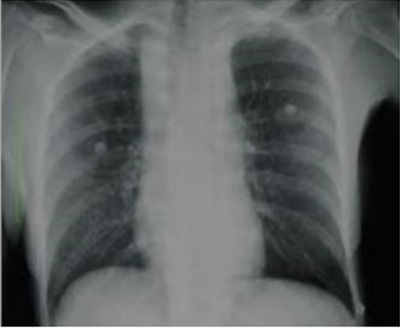
A Contusão pulmonar.
B Ruptura traumática da aorta.
C Tórax instável.
D Contusão cardíaca.
Questão 138 · Fraturas do Úmero · Lesão Nervosa · 4000099265Homem, 22a, é trazido ao Pronto Socorro após queda do telhado. Exame físico: PA= 130x75 mmHg, FC= 84 bpm, FR= 16 irpm, oximetria de pulso (ar ambiente)= 99%; neurológico: Escala de Coma de Glasgow= 15 e pupilas isofotorreagentes; membro superior esquerdo: deformidade e dor intensa na transição entre terço médio e distal do braço, com incapacidade de estender o punho e os dedos nas articulações metacarpofalângicas. O NERVO LESIONADO É:
A Ulnar.
B Radial.
C Mediano.
D Musculocutâneo.
Questão 139 · Trauma Cervical · Cirurgia · 4000099245Homem, 22a, procura atendimento médico por acidente na região cervical anterior com linha de cerol. Exame físico: PA= 124x78 mmHg, FC= 80bpm, FR= 16irpm, Oximetria de pulso (ar ambiente)= 97%; neurológico: Escala de Coma de Glasgow= 15 e pupilas isofotorreagentes; região cervical: lesão cortante horizontal em torno de 2,5 cm abaixo da cartilagem tireoide, com entrada e saída de ar conforme movimento respiratório e mínimo sangramento. A CONDUTA INICIAL É:
A Via aérea definitiva.
B Sutura do ferimento.
C Curativo compressivo.
D Radiograma de região cervical.
Questão 140 · Classif icação · Quadro Clínico e Indicações de Tomograf ia de Crânio · Classif icação · 4000099225Mulher, 70a, chega ao Pronto Socorro após queda da própria altura. Antecedente pessoais: hipertensão arterial sistêmica em uso de losartana 50mg/dia e acidente vascular isquêmico transitório em uso de ácido acetilsalicílico 100mg/dia. Exame físico: PA= 152x87 mmHg, FC= 72bpm, FR= 16irpm, oximetria de pulso (ar ambiente)= 99%; Face: ferimento em torno 2,0 cm na região do supercílio esquerdo; neurológico: Escala de Coma de Glasgow= 15 e pupilas isocóricas fotorreagentes. Realizou-se sutura. A CONDUTA É:
A Radiograma de crânio.
B Alta médica.
C Antibiótico por 48 horas.
D Observação clínica.
Questão 141 · Diagnósticos Dif erenciais · 4000099211Homem, 40a, procura atendimento médico referindo dor em andar superior do abdome, com irradiação para ancos, associada a náusea e vômitos. Antecedentes pessoais: etilismo há 15 anos, 1 garrafa de destilada/dia. Amilase= 854UI/L, Lipase= 378UI/L, AST= 308UI/L, ALT= 674UI/L. Ultrassonografia de abdome: colelitíase e coledocolitíase, sem dilatação de vias biliares extra-hepáticas. AS ALTERAÇÕES DA AMILASE E LIPASE ESTÃO ASSOCIADAS A:
A Cirrose hepática.
B Colangite.
C Obstrução do ducto cístico.
D Obstrução do ducto pancreático.
Questão 142 · Via Aérea · Dispositivos de Ventilação Extraglóticos e Supraglóticos · Cirurgia · 4000099195Mulher, 27a, trazida para Unidade de Pronto Atendimento, vítima de incêndio, resgatada de ambiente fechado com muita fumaça, queixando-se de náusea e dor de cabeça. Exame físico: PA= 125x85 mmHg, FC= 94bpm, FR= 18irpm, oximetria de pulso (ar ambiente)= 99%; neurológico: Escala de Coma de Glasgow= 15, pupilas isocóricas e fotorreagentes. A CONDUTA É:
A Oxigênio 100% em máscara sem reinalação.
B Tratamento sintomático; hidratação.
C Radiograma de tórax.
D Hemograma, tempo de protrombina e tempo de tromboplastina ativada.
Questão 143 · Epidemiologia e Fisiopatologia · Traumatismo Cranioencef álico · Traumatismo Craniencef álico · 4000099182Homem, 28a, vítima de agressão física é trazido ao Pronto Socorro pelo SAMU. Exame físico: PA= 127x82 mmHg, FC= 68bpm, FR= 16irpm, oximetria de pulso (ar ambiente) 98%; Neurológico: Escala de Coma de Glasgow= 15, pupilas isofotorreagentes, paralisia dos movimentos da hemiface direita. A ESTRUTURA LESIONADA É:
A Osso temporal do crânio.
B Nervo auriculotemporal.
C Nervo Acessório.
D Osso Maxilar da face.
Questão 144 · Outras Causas de Abdome Agudo Perf urativo · 4000099168Mulher, 36a, procura o Pronto Socorro com queixa de dor abdominal, náusea e inapetência há 2 dias, após realização de endoscopia digestiva alta. Realizada polipectomia, na segunda porção do duodeno face posterior. Exame físico: PA= 89x68 mmHg, FC= 126bpm, FR= 20irpm, T= 37,8°C, anictérica; Abdome: plano, ácido, dor a palpação profunda em epigástrio, sem descompressão brusca dolorosa, Sinais de Murphy e Blumberg ausentes. O EXAME COMPLEMENTAR DO ABDOME E O RESULTADO ESPERADO SÃO:
A Colangiopancreatografia; edema de pâncreas.
B Exame radiográfico simples; pneumoretroperitôneo.
C Tomografia computadorizada; pneumoperitôneo.
D Esôfago-estômago-duodeno contrastado; área cicatricial com estenose.
Questão 145 · Exames complementares · Diagnóstico · Artrite gonocócica · 4000099153Mulher, 38a, procura o Centro de Saúde com história de febre e queda do estado geral há 5 dias. Refere dor articular no período da manhã que melhora ao longo do dia, acometendo cotovelo direito, punho esquerdo e joelho direito. Há dois dias evoluiu com di culdade de etir o quarto dedo da mão direita e manchas pelo corpo. Antecedentes pessoais: atraso menstrual há duas semanas. Exame físico: T=38°C, PA=110x70 mmHg, FC=95 bpm; Membros: joelho direito: aumento da temperatura e sinal da tecla positivo. Pele e mão (ANEXO A). A BACTERIOSCOPIA ESPERADA NA ANÁLISE DA SECREÇÃO ARTICULAR É:

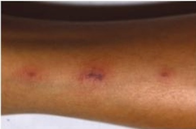
A Diplococus Gram negativos intra e extracelulares.
B Bacilo Gram negativo.
C Hifas septadas.
D Coco bacilo Gram negativo.
Questão 146 · Diagnóstico e tratamento de erisipela e celulite · 4000099118Homem, 40a, refere hiperemia, dor e edema em tornozelo e pé direito há três dias. Ausência de comorbidades e internações prévias. Exame físico (ANEXO A): EM RELAÇÃO AO USO RACIONAL DE ANTIMICROBIANOS A CONDUTA É ADMINISTRAR:

A Vancomicina ou teicoplanina.
B Clindamicina ou um macrolídeo em pacientes alérgicos à penicilina.
C Ceftriaxona.
D Antibiótico baseado no resultado do swab da lesão.
Questão 147 · Complicações da DRC Doença Mineral e óssea · Manejo de sintomas · 4000099096Mulher, 56a, retorna para consulta de rotina referindo dores ósseas e fraqueza de membros inferiores. Antecedentes pessoais: doença renal crônica secundária a doença policística autossômica dominante e hipertensão arterial controlada com bloqueador de canal de cálcio. Cálcio= 8,3 mg/dL, fósforo= 6,5 mg/dL; fosfatase alcalina= 600 UI/L; taxa de ltração glomerular= 17ml/min/1,73m², PTH= 300 pg/mL. A CONDUTA É:
A Suspender o bloqueador de canal de cálcio, iniciar vitamina D₃.
B Iniciar restrição dietética de fósforo e suplementar carbonato de cálcio.
C Aumentar o aporte de cálcio na dieta e iniciar reposição de vitamina A.
D Iniciar calcitonina e carbonato de cálcio e programar paratireoidectomia.
Questão 148 · Síndrome nef rótica · Glomerulonef rite membranoprolif erativa · 4000099084Homem, 60a, procura Unidade Básica de Saúde com edema progressivo, urina espumosa e redução do volume urinário há dois meses. Exame físico: PA= 124x78 mmHg; edema palpebral bilateral, edema sacral +/4+, ascite, edema de membros inferiores ++/4+ até raiz de coxas. Pulmões: murmúrio vesicular diminuído em bases pulmonares. Albuminemia= 2,4g/dL; glicemia= 78mg/dL, creatinina= 1,4mg/dL, proteinúria de 24 horas= 10 gramas/24horas; Exame sumário de urina: hemácias= 2/campo, leucócitos= 1/campo, proteína +++/4+. OS DIAGNÓSTICOS SINDRÔMICO E NOSOLÓGICO SÃO:
A Síndrome nefrótica; glomerulonefrite membranosa.
B Síndrome nefrótica; nefropatia diabética.
C Síndrome nefrítica; glomerulonefrite de lesões mínimas.
D Síndrome nefrítica; glomeruloesclerose focal e segmentar.
Questão 149 · Tratamento não medicamentoso · 4000099072Homem, 51a, retorna à Unidade Básica de Saúde assintomático, com exames. Exame físico: PA= 138x88 mmHg, IMC= 26 kg/m². Glicemia= 90 mg/dL; triglicérides=182 mg/dL e colesterol total= 195 mg/dL. A CONDUTA É:
A Terapia não farmacológica.
B Diurético tiazídico.
C Inibidor da enzima conversora da angiotensina.
D Betabloqueador.
Questão 150 · Tratamento · Complicações · Quadro clínico · 4000099062Mulher, 30a, procurou a Unidade de Pronto Atendimento com febre, mal-estar, náuseas, dor nas pernas e cefaleia holocraniana há três dias. Refere um episódio de vômito e 4 evacuações amolecidas hoje. Antecedentes epidemiológicos: casos semelhantes na vizinhança. Exame físico: FC= 78 bpm, PA= 110x70 mmHg; pele: discreto exantema macular em tórax, abdome e extremidades; prova do laço negativa. Hematócrito= 51%. A CONDUTA É:
A Liberar com orientações.
B Coletar sorologia para dengue.
C Prescrever ciprofloxacina.
D Hidratar e repetir hematócrito.
Questão 151 · Tratamento · 4000099051Homem, 45a, procurou a Unidade Básica de Saúde com história de lesões em palmas das mãos há duas semanas. Fez uso de anti-histamínico, com subsequente piora das lesões. Exame físico (ANEXO A): É CORRETO AFIRMAR:
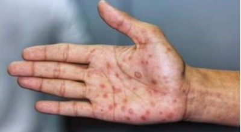
A Nesse estágio, há intensa produção de anticorpos contra o patógeno e os títulos não deverão ser utilizados para o seguimento.
B As lesões observadas são resultantes de mecanismo imune e com ausência do agente etiológico nos exames específicos.
C As lesões apresentarão remissão com o tratamento antimicrobiano específico.
D Nos últimos 10 anos observou-se aumento da resistência antimicrobiana do agente etiológico.
Questão 152 · Farmacológico · 4000099026Homem, 64a, comparece ao Pronto Socorro com di culdade respiratória há 2 dias acompanhada de tosse seca, nega febre ou edema de membros. Antecedente pessoal: tabagismo 30 maços/ano, parou de fumar há 2 anos, diagnóstico de doença pulmonar obstrutiva crônica há 6 meses e iniciou uso inalatório de formoterol e brometro de tiotrópio. Exame físico: agitado, FR=26 irpm, oximetria de pulso (ar ambiente)= 86%; cianose de extremidades, pulmões: redução global do murmúrio vesicular, com raros sibilos. A CONDUTA É:
A Gasometria arterial, radiograma de tórax, hemograma, oxigenioterapia, corticosteroidesistêmico e broncodilatadores.
B Angiotomografia de tórax, eletrocardiograma, oxigenoterapia e anticoagulação plena.
C Espirometria, radiograma de tórax, hemograma, corticosteroide inalatório, broncodilatadores e antibioticoterapia.
D Broncoscopia para coleta de lavado brônquico, antibioticoterapia, corticosteroide inalatório e broncodilatadores.
Questão 153 · Diagnóstico · Tratamento · 4000099015Homem, 48a, procura o Pronto Socorro com queixa de desconforto abdominal e diminuição do volume urinário há 10 dias, sem febre. Antecedente pessoal: cirrose hepática por hepatite C. Exame físico: abdome: ascite presente; membros inferiores: edema ++/4+. Bilirrubina total= 4,2 mg/dL; RNI= 1,55; creatinina= 0,9 mg/dL, albuminemia= 2,8 g/dL; líquido ascítico: proteína= 1,2 g/dL; albumina= 0,8 g/dL, glicose= 88 g/dL, LDH= 182UI/L, leucócitos= 480/mL (neutró los:68%; linfócitos: 20%; monócitos: 8%; células mesoteliais: 4%), hemácias= 570/mL, cultura em andamento. O DIAGNÓSTICO E O TRATAMENTO SÃO:
A Peritonite bacteriana espontânea; antibiótico de amplo espectro, sem necessidade dealbumina humana.
B Aguardar resultado da cultura para diagnóstico de peritonite bacteriana espontânea;iniciar antibiótico dirigido.
C Peritonite bacteriana espontânea; cefalosporina de terceira geração e albuminahumana.
D Hipertensão portal; diurético de alça e dieta hipossódica.
Questão 154 · Abordagem inicial · História clínica e anamnese · Eletrocardiograma · 4000099004Homem, 63a, procura o Pronto Socorro queixando-se de dor no peito em aperto com irradiação para face medial de ambos os braços, sudorese e cansaço. No eletrocardiograma de entrada foi detectado supradesnivelamento do segmento ST em derivações anterolaterais. Após abordagem inicial o monitor mostrou o traçado a seguir: A CONDUTA IMEDIATA É:
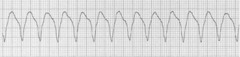
A Desfibrilação.
B Checar pulso.
C Amiodarona 300 mg endovenosa.
D Cardioversão elétrica sincronizada.
Questão 155 · Síndrome Narcótica · Intoxicação por Opioides · Intoxicações Exógenas · 4000098977Homem, 43a, encontrado em sua casa pelos familiares, desacordado e ao lado de embalagens vazias e de comprimidos. Tem antecedente de uso de drogas ilícitas e etilismo. Exame físico: letárgico, abertura ocular à estimulo doloroso; balbucia palavras quando estimulado; localiza a dor; olhos: miose bilateral. O TRATAMENTO É:
A Flumazenil.
B Fisostigmina.
C Glicose e tiamina.
D Naloxona.
Questão 156 · Manif estações clínicas · 4000098966O ACHADO CLÍNICO MAIS CONFIÁVEL PARA AVALIAR INSUFICIÊNCIA VENTRICULAR DIREITA É:
A Estertores de bulhas finas em bases.
B Perfusão periférica diminuída.
C Estase jugular pulsátil a 45°.
D Edema de membros inferiores.
Questão 157 · Inf arto Agudo do miocárdio com supra de ST IAMCSST · 4000098951Homem, 44a, procura o Pronto Atendimento com precordialgia intensa há 20 minutos. ECG: O DIAGNÓSTICO É:
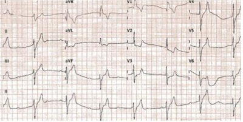
A Dissecção de aorta.
B Isquemia miocárdica.
C Derrame pericárdico.
D Pericardite aguda.
Questão 158 · Abordagem terapêutica · 4000098920Homem, 75a, internado com insu ciência cardíaca. Exame físico: FC= 118 bpm, PA= 96x60 mmHg, T=36,5°C, pulsos cheios; pulmões: estertores crepitantes em bases pulmonares; membros inferiores: edema +++/+4. O TRATAMENTO FARMACOLÓGICO INICIAL VISA:
A Elevar a pressão arterial para evitar a má perfusão de órgãos vitais como rins e fígado.
B Reduzir a frequência cardíaca para diminuir o consumo de oxigênio no miocárdio.
C Promover broncodilatação para facilitar o aporte de oxigênio para circulação arterial.
D Reduzir a pré e a pós carga para melhorar o desempenho do ventrículo esquerdo.
Questão 159 · Quadro clínico · Tratamento da hiponatremia · Nef rologia · 4000098904Homem, 60a, procura atendimento médico por fadiga e di culdade de concentração. Antecedente pessoal: câncer de pulmão de pequenas células em tratamento. Exame físico: PA= 130x80 mmHg, FC= 80 bpm. Sódio= 125 mEq/L, creatinina= 1,0 mg/dL, ureia= 15 mg/dL, osmolaridade urinária= 350 mmol/kg. A CONDUTA É:
A Solução salina isotônica.
B Sais de lítio.
C Espironolactona.
D Restrição de ingesta hídrica.
Questão 160 · Diagnóstico da policitemia vera PV · 4000098888Homem, 48a, retorna a consulta ambulatorial para resultado de exames após acidente vascular cerebral isquêmico há 4 semanas, com boa evolução da fase aguda. Antecedente pessoal: cirurgia bariátrica há 5 anos, sem acompanhamento ou mediações regulares. Hemoglobina= 19,g/dL, VCM= 63fL, hemácias= 7.000.000/µL; leucócitos= 18.000/µL (segmentados 76%, linfócitos 10%, monócitos 5%; eosinó los 6%, basó los 3%), plaquetas= 550.000/µL. Ferritina: 4ng/mL. Exame físico: baço palpável a 2 cm do rebordo costal esquerdo. O DIAGNÓSTICO É: Respostas: 1 12 23 34 45 56 67 78 89 100 111 122 133 144 155
A Traço talassêmico.
B Anemia ferropriva.
C Policitemia Vera
D Trombofilia hereditária.